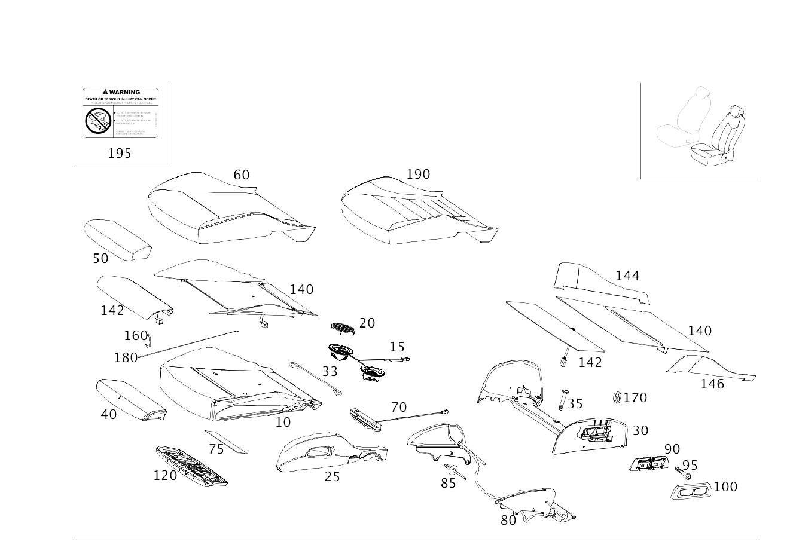

| № | Артикул | Название | Кол. | Примечание | Ограничение |
|---|---|---|---|---|---|
| 10 | A 205 910 01 00 | Подкладка подушки сиденья (PADDING, FRT. SEAT CUSH.) | 1 | Сиденье с полным электроприводом регулировки положения | (000A/130A) |
| 10 | A 205 910 01 50 | Подкладка подушки сиденья (PADDING, FRT. SEAT CUSH.) | 1 | Сиденье с полным электроприводом регулировки положения Рулевое управление: Влево [402] БОЛЬШЕ НЕ ПОСТАВЛЯЕТСЯ | 805+(000A/130A)+(275/P65) |
| 10 | A 205 910 01 50 | Подкладка подушки сиденья (PADDING, FRT. SEAT CUSH.) | 1 | Сиденье с полным электроприводом регулировки положения Рулевое управление: Вправо [402] БОЛЬШЕ НЕ ПОСТАВЛЯЕТСЯ | 805+(000A/130A)+(241/P65) |
| 10 | A 205 910 03 50 | Подкладка подушки сиденья (PADDING, FRT. SEAT CUSH.) | 1 | Сиденье с полным электроприводом регулировки положения | (P75+200A/P14/P22/P29)+-(P65/221/241) |
| 10 | A 205 910 04 50 | Подкладка подушки сиденья (PADDING, FRT. SEAT CUSH.) | 1 | Сиденье с полным электроприводом регулировки положения Рулевое управление: Влево | (P75+200A/P14/P22/P29/P86)+(P65/221/275) |
| 10 | A 205 910 04 50 | Подкладка подушки сиденья (PADDING, FRT. SEAT CUSH.) | 1 | Сиденье с полным электроприводом регулировки положения Рулевое управление: Вправо | (P75+200A/P14/P22/P29/P86)+(P65/221/241) |
| 10 | A 205 910 07 50 | Подкладка подушки сиденья (PADDING, FRT. SEAT CUSH.) | 1 | Сиденье с полным электроприводом регулировки положения Рулевое управление: Влево | (P14/P22/P29)+(P65/221/275)+401 |
| 10 | A 205 910 07 50 | Подкладка подушки сиденья (PADDING, FRT. SEAT CUSH.) | 1 | Сиденье с полным электроприводом регулировки положения Рулевое управление: Вправо | (P14/P22/P29)+(P65/221/241)+401+805 |
| 10 | A 205 910 74 16 | Подкладка подушки сиденья (PADDING, FRT. SEAT CUSH.) | 1 | Сиденье с полным электроприводом регулировки положения | 806+(000A/130A) |
| 10 | A 205 910 75 16 | Подкладка подушки сиденья (PADDING, FRT. SEAT CUSH.) | 1 | Сиденье с полным электроприводом регулировки положения Рулевое управление: Влево | 806+(000A/130A)+(275/P65) |
| 10 | A 205 910 75 16 | Подкладка подушки сиденья (PADDING, FRT. SEAT CUSH.) | 1 | Сиденье с полным электроприводом регулировки положения Рулевое управление: Вправо | 806+(000A/130A)+(241/P65) |
| 10 | A 205 910 76 16 | Подкладка подушки сиденья (PADDING, FRT. SEAT CUSH.) | 1 | Сиденье с полным электроприводом регулировки положения | 806+(P75+200A/P14/P22/P29) |
| 10 | A 205 910 76 16 | Подкладка подушки сиденья (PADDING, FRT. SEAT CUSH.) | 1 | Сиденье с полным электроприводом регулировки положения | 806+(200A+(P75/P14)/220A+P22/250A+P29) |
| 10 | A 205 910 77 16 | Подкладка подушки сиденья (PADDING, FRT. SEAT CUSH.) | 1 | Сиденье с полным электроприводом регулировки положения Рулевое управление: Влево | (200A+(P14)/220A+P22/250A+P29)+(P65/221/275)+806 |
| 10 | A 205 910 77 16 | Подкладка подушки сиденья (PADDING, FRT. SEAT CUSH.) | 1 | Сиденье с полным электроприводом регулировки положения Рулевое управление: Вправо | (200A+(P75/P14)/220A+P22/250A+P29/P86)+(P65/221/241)+806 |
| 10 | A 205 910 79 16 | Подкладка подушки сиденья (PADDING, FRT. SEAT CUSH.) | 1 | Сиденье с полным электроприводом регулировки положения Рулевое управление: Влево | (P14/P22/P29)+(P65/221/275)+401+806 |
| 10 | A 205 910 79 16 | Подкладка подушки сиденья (PADDING, FRT. SEAT CUSH.) | 1 | Сиденье с полным электроприводом регулировки положения Рулевое управление: Вправо | (P14/P22/P29)+(P65/221/241)+401+806 |
| 10 | A 205 910 76 16 | Подкладка подушки сиденья (PADDING, FRT. SEAT CUSH.) | 1 | Сиденье с полным электроприводом регулировки положения Рулевое управление: Влево | (P14/P22/P29)+806 |
| 10 | A 205 910 76 16 | Подкладка подушки сиденья (PADDING, FRT. SEAT CUSH.) | 1 | Сиденье с полным электроприводом регулировки положения Рулевое управление: Вправо | (P14/P22/P29)+806 |
| 10 | A 205 910 76 16 | Подкладка подушки сиденья (PADDING, FRT. SEAT CUSH.) | 1 | Сиденье с полным электроприводом регулировки положения | (P14/P22/P29)+806 |
| 10 | A 205 910 88 16 | Подкладка подушки сиденья (PADDING, FRT. SEAT CUSH.) | 1 | Сиденье с полным электроприводом регулировки положения Рулевое управление: Влево | 806+(P14/P22/P29)+(P65/221/275) |
| 10 | A 205 910 77 16 | Подкладка подушки сиденья (PADDING, FRT. SEAT CUSH.) | 1 | Сиденье с полным электроприводом регулировки положения Рулевое управление: Влево | 806+(P14/P22/P29)+(P65/221/275) |
| 10 | A 205 910 88 16 | Подкладка подушки сиденья (PADDING, FRT. SEAT CUSH.) | 1 | Сиденье с полным электроприводом регулировки положения Рулевое управление: Вправо | 806+(P14/P22/P29)+(P65/221/241) |
| 10 | A 205 910 77 16 | Подкладка подушки сиденья (PADDING, FRT. SEAT CUSH.) | 1 | Сиденье с полным электроприводом регулировки положения Рулевое управление: Вправо | 806+(P14/P22/P29)+(P65/221/241) |
| 10 | A 205 910 74 16 | Подкладка подушки сиденья (PADDING, FRT. SEAT CUSH.) | 1 | Сиденье с полным электроприводом регулировки положения | (000A/130A) |
| 10 | A 205 910 75 16 | Подкладка подушки сиденья (PADDING, FRT. SEAT CUSH.) | 1 | Сиденье с полным электроприводом регулировки положения Рулевое управление: Влево | (000A/130A)+(P65/275) |
| 10 | A 205 910 75 16 | Подкладка подушки сиденья (PADDING, FRT. SEAT CUSH.) | 1 | Сиденье с полным электроприводом регулировки положения Рулевое управление: Вправо | (000A/130A)+(P65/241) |
| 10 | A 205 910 77 16 | Подкладка подушки сиденья (PADDING, FRT. SEAT CUSH.) | 1 | Сиденье с полным электроприводом регулировки положения | P62/P87 |
| 10 | A 205 910 79 16 | Подкладка подушки сиденья (PADDING, FRT. SEAT CUSH.) | 1 | Сиденье с полным электроприводом регулировки положения | (P62/P87)+401 |
| 10 | A 205 910 76 16 | Подкладка подушки сиденья (PADDING, FRT. SEAT CUSH.) | 1 | Сиденье с полным электроприводом регулировки положения | 200A/220A/250A/610A |
| 10 | A 205 910 77 16 | Подкладка подушки сиденья (PADDING, FRT. SEAT CUSH.) | 1 | Сиденье с полным электроприводом регулировки положения Рулевое управление: Влево | (200A/220A/250A/610A)+(P65/221/275) |
| 10 | A 205 910 77 16 | Подкладка подушки сиденья (PADDING, FRT. SEAT CUSH.) | 1 | Сиденье с полным электроприводом регулировки положения Рулевое управление: Вправо | (200A/220A/250A/610A)+(P65/221/241/275) |
| 10 | A 205 910 87 16 | Подкладка подушки сиденья (PADDING, FRT. SEAT CUSH.) | 1 | Сиденье с полным электроприводом регулировки положения | |
| 10 | A 205 910 88 16 | Подкладка подушки сиденья (PADDING, FRT. SEAT CUSH.) | 1 | Сиденье с полным электроприводом регулировки положения Рулевое управление: Влево | P65/221/275 |
| 10 | A 205 910 88 16 | Подкладка подушки сиденья (PADDING, FRT. SEAT CUSH.) | 1 | Сиденье с полным электроприводом регулировки положения Рулевое управление: Вправо | P65/221/241 |
| 10 | A 205 910 88 16 | Подкладка подушки сиденья (PADDING, FRT. SEAT CUSH.) | 1 | Сиденье с полным электроприводом регулировки положения Рулевое управление: Вправо | P65/221/241/275 |
| 10 | A 205 910 78 16 | Подкладка подушки сиденья (PADDING, FRT. SEAT CUSH.) | 1 | Сиденье с полным электроприводом регулировки положения | 401 |
| 10 | A 205 910 79 16 | Подкладка подушки сиденья (PADDING, FRT. SEAT CUSH.) | 1 | Сиденье с полным электроприводом регулировки положения Рулевое управление: Влево | (P65/221/275)+401 |
| 10 | A 205 910 79 16 | Подкладка подушки сиденья (PADDING, FRT. SEAT CUSH.) | 1 | Сиденье с полным электроприводом регулировки положения Рулевое управление: Вправо | (P65/221/241)+401 |
| 10 | A 205 910 79 16 | Подкладка подушки сиденья (PADDING, FRT. SEAT CUSH.) | 1 | Сиденье с полным электроприводом регулировки положения Рулевое управление: Вправо | (P65/221/241/275)+401+-(805/806/807) |
| 10 | A 205 910 65 04 | Подкладка подушки сиденья (PADDING, FRT. SEAT CUSH.) | 1 | Сиденье с полным электроприводом регулировки положения | 555+(805/806/807/808) |
| 10 | A 205 910 34 27 | Подкладка подушки сиденья (PADDING, FRT. SEAT CUSH.) | 1 | Сиденье с полным электроприводом регулировки положения | 555+(809/800/801/802/803/804) |
| 10 | A 213 910 45 13 | Подкладка подушки сиденья (PADDING, FRT. SEAT CUSH.) | 1 | Сиденье с полным электроприводом регулировки положения | 555+401+(809/800/801/802/803/804) |
| 10 | A 213 910 46 13 | Подкладка подушки сиденья (PADDING, FRT. SEAT CUSH.) | 1 | Сиденье с полным электроприводом регулировки положения Рулевое управление: Вправо | 555+401+U10 |
| 15 | A 099 906 01 15 | - Вентилятор (FAN) | 1 | Подушка | 401 |
| 15 | A 099 906 03 02 | - Вентилятор (FAN) | 1 | Подушка | 401 |
| 15 | A 099 906 02 01 | - Вентилятор (FAN) | 1 | Подушка | 555+401 |
| 20 | A 220 914 00 36 | - Крышка (COVER) | 2 | Вентилятор | 401 |
| 25 | A 205 910 81 15 | Подкладка подушки сиденья (PADDING, FRT. SEAT CUSH.) | 1 | Слева | 555+(805/806/807/808) |
| 25 | A 205 910 78 15 | Подкладка подушки сиденья (PADDING, FRT. SEAT CUSH.) | 1 | Справа | 555+(805/806/807/808) |
| 30 | A 205 910 83 05 | Усиливающий элемент (STIFFENER) | 1 | Подушка | 555+(805/806/807/808) |
| 30 | A 205 910 77 38 | Усиливающий элемент (STIFFENER) | 1 | Подушка | 555+-(805/806/807/808) |
| 33 | A 140 924 45 29 | - Скоба (BRACKET) | 2 | Поперечная прошивка (передняя); 310 MM | 555 |
| 35 | A 166 990 00 12 | болт (SCREW) | 2 | Крепление элемента жесткости 6X30 | 555+(805/806/807/808) |
| 35 | A 001 984 66 29 | Болт с головкой торкс (HEXALOBULAR BOLT) | 2 | Крепление элемента жесткости; 5X30 | 555+-(805/806/807/808) |
| 40 | A 205 910 05 50 | Подкладка подушки сиденья (PADDING, FRT. SEAT CUSH.) | 1 | Спереди Рулевое управление: Влево | P65/221/275/P62/P87 |
| 40 | A 205 910 94 22 | Подкладка подушки сиденья (PADDING, FRT. SEAT CUSH.) | 1 | Спереди Рулевое управление: Влево | P65/221/275/P62 |
| 40 | A 205 910 05 50 | Подкладка подушки сиденья (PADDING, FRT. SEAT CUSH.) | 1 | Спереди Рулевое управление: Вправо | (P65/221/241/P62/P87)+(805/806/807) |
| 40 | A 205 910 94 22 | Подкладка подушки сиденья (PADDING, FRT. SEAT CUSH.) | 1 | Спереди Рулевое управление: Вправо | (P65/221/241/275/P62/P87)+-(805/806/807) |
| 40 | A 205 910 60 07 | Подкладка подушки сиденья (PADDING, FRT. SEAT CUSH.) | 1 | Спереди | 555+(805/806/807/808) |
| 40 | A 205 910 43 21 | Подкладка подушки сиденья (PADDING, FRT. SEAT CUSH.) | 1 | Спереди | 555+-(805/806/807/808) |
| 50 | A 205 910 88 15 | Обивка подушки сиденья (OUTER COVER, SEAT CUSHION) | 1 | Рулевое управление: Влево | 000A+(P65/275) |
| 50 | A 205 910 02 46 | Обивка подушки сиденья (OUTER COVER, SEAT CUSHION) | 1 | Рулевое управление: Вправо | 000A+(P65/241)+-(805/806/807) |
| 50 | A 205 910 88 15 | Обивка подушки сиденья (OUTER COVER, SEAT CUSHION) | 1 | Рулевое управление: Вправо | 000A+(P65/241)+-(805/806/807) |
| 50 | A 205 910 88 15 | Обивка подушки сиденья (OUTER COVER, SEAT CUSHION) | 1 | Рулевое управление: Вправо | 000A+(P65/241/275)+-(805/806/807) |
| 50 | A 205 910 34 14 | Обивка подушки сиденья | 1 | Рулевое управление: Влево | (805/806/807)+130A+(450/P10)+(P65/221/275) |
| 50 | A 205 910 69 13 | Обивка подушки сиденья (OUTER COVER, SEAT CUSHION) | 1 | Рулевое управление: Влево | (200A/220A/250A)+(P65/221/275)+(805/806/807) |
| 50 | A 205 910 69 13 | Обивка подушки сиденья (OUTER COVER, SEAT CUSHION) | 1 | Рулевое управление: Вправо | (200A/220A/250A)+(P65/221/241)+(805/806/807) |
| 50 | A 205 910 70 13 | Обивка подушки сиденья (OUTER COVER, SEAT CUSHION) | 1 | Рулевое управление: Влево | (200A/220A/250A)+(P65/221/275)+401 |
| 50 | A 205 910 70 13 | Обивка подушки сиденья (OUTER COVER, SEAT CUSHION) | 1 | Рулевое управление: Вправо | (200A/220A/250A)+(P65/221/241)+401+(805/806/807) |
| 50 | A 205 910 05 46 | Обивка подушки сиденья (OUTER COVER, SEAT CUSHION) | 1 | Рулевое управление: Влево | 300A+(P65/221/275)+(805/806/807) |
| 50 | A 205 910 05 46 | Обивка подушки сиденья (OUTER COVER, SEAT CUSHION) | 1 | Рулевое управление: Вправо | 300A+(P65/221/241)+(805/806/807) |
| 50 | A 205 910 14 46 | Обивка подушки сиденья (OUTER COVER, SEAT CUSHION) | 1 | Рулевое управление: Влево | 600A+(P65/221/275)+(805/806/807) |
| 50 | A 205 910 28 25 | Обивка подушки сиденья (OUTER COVER, SEAT CUSHION) | 1 | Рулевое управление: Влево | 320A+(P65/221/275) |
| 50 | A 205 910 28 25 | Обивка подушки сиденья (OUTER COVER, SEAT CUSHION) | 1 | Рулевое управление: Вправо | 320A+(P65/221/241/275) |
| 50 | A 205 910 08 46 | Обивка подушки сиденья (OUTER COVER, SEAT CUSHION) | 1 | Рулевое управление: Вправо | (100A/130A/140A)+(P65/221/241)+(805/806/807) |
| 50 | A 205 910 08 46 | Обивка подушки сиденья (OUTER COVER, SEAT CUSHION) | 1 | Рулевое управление: Вправо | (100A/130A/140A)+(P65/221/241/275)+-(805/806/807) |
| 50 | A 205 910 08 46 | Обивка подушки сиденья (OUTER COVER, SEAT CUSHION) | 1 | Рулевое управление: Влево | (100A/130A/140A)+(P65/221/275) |
| 50 | A 205 910 34 14 | Обивка подушки сиденья | 2 | Рулевое управление: Вправо | 130A+(450/P10)+(P65/221/241)+(805/806/807) |
| 50 | A 205 910 34 14 | Обивка подушки сиденья | 1 | Рулевое управление: Вправо | 130A+(450/P10)+(P65/221/241/275)+-(805/806/807) |
| 50 | A 205 910 34 14 | Обивка подушки сиденья | 1 | Рулевое управление: Влево | 130A+(450/P10)+(P65/221/275)+-(805/806/807) |
| 50 | A 253 910 77 01 | Обивка подушки сиденья (OUTER COVER, SEAT CUSHION) | 1 | Рулевое управление: Влево | 630A+(P65/221/275)+-(805/806/807/808) |
| 50 | A 253 910 77 01 | Обивка подушки сиденья (OUTER COVER, SEAT CUSHION) | 1 | Рулевое управление: Вправо | 630A+(P65/221/241/275)+-(805/806/807/808) |
| 50 | A 205 910 69 13 | Обивка подушки сиденья (OUTER COVER, SEAT CUSHION) | 1 | Рулевое управление: Влево | 200A+(P65/221/275) |
| 50 | A 205 910 69 13 | Обивка подушки сиденья (OUTER COVER, SEAT CUSHION) | 1 | Рулевое управление: Вправо | 200A+(P65/221/241/275)+-(805/806/807) |
| 50 | A 205 910 70 13 | Обивка подушки сиденья (OUTER COVER, SEAT CUSHION) | 1 | Рулевое управление: Влево | 200A+(P65/221/275)+401 |
| 50 | A 205 910 70 13 | Обивка подушки сиденья (OUTER COVER, SEAT CUSHION) | 1 | Рулевое управление: Вправо | 200A+(P65/221/241/275)+401+-(805/806/807) |
| 50 | A 205 910 69 13 | Обивка подушки сиденья (OUTER COVER, SEAT CUSHION) | 1 | Рулевое управление: Влево | (220A/250A)+(P65/221/275) |
| 50 | A 205 910 69 13 | Обивка подушки сиденья (OUTER COVER, SEAT CUSHION) | 1 | Рулевое управление: Вправо | (220A/250A)+(P65/221/241/275)+-(805/806/807) |
| 50 | A 205 910 70 13 | Обивка подушки сиденья (OUTER COVER, SEAT CUSHION) | 1 | Рулевое управление: Влево | (220A/250A)+(P65/221/275)+401 |
| 50 | A 205 910 70 13 | Обивка подушки сиденья (OUTER COVER, SEAT CUSHION) | 1 | Рулевое управление: Вправо | (220A/250A)+(P65/221/241/275)+401+-(805/806/807) |
| 50 | A 205 910 05 46 | Обивка подушки сиденья (OUTER COVER, SEAT CUSHION) | 1 | Рулевое управление: Влево | 300A+(P65/221/275)+-(805/806/807) |
| 50 | A 205 910 05 46 | Обивка подушки сиденья (OUTER COVER, SEAT CUSHION) | 1 | Рулевое управление: Вправо | 300A+(P65/221/241/275)+-(805/806/807) |
| 50 | A 205 910 14 46 | Обивка подушки сиденья (OUTER COVER, SEAT CUSHION) | 1 | Рулевое управление: Влево | 600A+(P65/221/275) |
| 50 | A 205 910 14 46 | Обивка подушки сиденья (OUTER COVER, SEAT CUSHION) | 2 | Рулевое управление: Вправо | 600A+(P65/221/241)+(805/806/807) |
| 50 | A 205 910 14 46 | Обивка подушки сиденья (OUTER COVER, SEAT CUSHION) | 1 | Рулевое управление: Вправо | 600A+(P65/221/241/275)+-(805/806/807) |
| 50 | A 205 910 59 10 | Обивка подушки сиденья (OUTER COVER, SEAT CUSHION) | 1 | 500A | |
| 50 | A 205 910 27 13 | Обивка подушки сиденья (OUTER COVER, SEAT CUSHION) | 1 | Рулевое управление: Влево | 610A+(P65/275) |
| 50 | A 205 910 27 13 | Обивка подушки сиденья (OUTER COVER, SEAT CUSHION) | 1 | Рулевое управление: Вправо | 610A+(P65/241) |
| 50 | A 205 910 28 13 | Обивка подушки сиденья (OUTER COVER, SEAT CUSHION) | 1 | Рулевое управление: Влево | 250A+241A+275 |
| 50 | A 205 910 28 13 | Обивка подушки сиденья (OUTER COVER, SEAT CUSHION) | 1 | Рулевое управление: Вправо | 250A+241A+241 |
| 50 | A 205 910 29 13 | Обивка подушки сиденья | 1 | Рулевое управление: Влево | (800A/850A)+275 |
| 50 | A 205 910 29 13 | Обивка подушки сиденья | 1 | Рулевое управление: Вправо | (800A/850A)+241 |
| 50 | A 205 910 32 18 | Обивка подушки сиденья (OUTER COVER, SEAT CUSHION) | 1 | 555+250A+241A+(805/806/807/808) | |
| 50 | A 205 910 31 33 | Обивка подушки сиденья (OUTER COVER, SEAT CUSHION) | 1 | 555+250A+241A+-(805/806/807/808) | |
| 50 | A 205 910 33 18 | Обивка подушки сиденья (OUTER COVER, SEAT CUSHION) | 1 | 555+(964A/965A/821A)+(805/806/807/808) | |
| 50 | A 205 910 33 33 | Обивка подушки сиденья | 1 | 555+964A+809 | |
| 50 | A 205 910 92 36 | Обивка подушки сиденья | 1 | 555+965A+809 | |
| 50 | A 253 910 37 04 | Обивка подушки сиденья (OUTER COVER, SEAT CUSHION) | 1 | 555+(964A/965A)+-(805/806/807/808/809) | |
| 50 | A 205 910 34 18 | Обивка подушки сиденья | 1 | 555+610A+(805/806/807/808) | |
| 50 | A 205 910 34 33 | Обивка подушки сиденья | 1 | 555+610A+-(805/806/807/808) | |
| 50 | A 205 910 35 18 | Обивка подушки сиденья (OUTER COVER, SEAT CUSHION) | 1 | 555+610A+621A | |
| 50 | A 205 910 29 18 | Обивка подушки сиденья (OUTER COVER, SEAT CUSHION) | 1 | 555+800A+(805/806/807/808) | |
| 50 | A 205 910 36 33 | Обивка подушки сиденья | 1 | 555+800A+-(805/806/807/808) | |
| 50 | A 205 910 30 18 | Обивка подушки сиденья (OUTER COVER, SEAT CUSHION) | 1 | 555+800A+811A+(805/806/807/808) | |
| 50 | A 205 910 37 33 | Обивка подушки сиденья | 1 | 555+800A+811A+-(805/806/807/808) | |
| 50 | A 205 910 31 18 | Обивка подушки сиденья (OUTER COVER, SEAT CUSHION) | 1 | 555+850A+(805/806/807/808) | |
| 50 | A 205 910 38 33 | Обивка подушки сиденья | 1 | 555+850A+-(805/806/807/808) | |
| 50 | A 205 910 92 38 | Обивка подушки сиденья (OUTER COVER, SEAT CUSHION) | 1 | 555+850A+858A+-(805/806/807/808) | |
| 50 | A 205 910 09 38 | Обивка подушки сиденья (OUTER COVER, SEAT CUSHION) | 1 | Рулевое управление: Влево | (100A/130A/140A)+(P65/221/275) |
| 50 | A 205 910 09 38 | Обивка подушки сиденья (OUTER COVER, SEAT CUSHION) | 1 | Рулевое управление: Вправо | (100A/130A/140A)+(P65/221/241/275) |
| 60 | A 205 910 86 15 | Обивка подушки сиденья (OUTER COVER, SEAT CUSHION) | 1 | 000A | |
| 60 | A 205 910 87 15 | Обивка подушки сиденья (OUTER COVER, SEAT CUSHION) | 1 | Рулевое управление: Влево | 000A+(P65/275) |
| 60 | A 205 910 01 46 | Обивка подушки сиденья (OUTER COVER, SEAT CUSHION) | 1 | Рулевое управление: Вправо | 000A+(P65/241)+(805/806/807) |
| 60 | A 205 910 87 15 | Обивка подушки сиденья (OUTER COVER, SEAT CUSHION) | 1 | Рулевое управление: Вправо | 000A+(P65/241)+(805/806/807) |
| 60 | A 205 910 87 15 | Обивка подушки сиденья (OUTER COVER, SEAT CUSHION) | 1 | Рулевое управление: Вправо | 000A+(P65/241/275)+-(805/806/807) |
| 60 | A 205 910 06 46 | Обивка подушки сиденья (OUTER COVER, SEAT CUSHION) | 1 | 130A | |
| 60 | A 205 910 40 39 | Обивка подушки сиденья (OUTER COVER, SEAT CUSHION) | 1 | 130A | |
| 60 | A 205 910 28 42 | Обивка подушки сиденья (OUTER COVER, SEAT CUSHION) | 1 | 130A | |
| 60 | A 205 910 07 46 | Обивка подушки сиденья (OUTER COVER, SEAT CUSHION) | 1 | Рулевое управление: Влево | 130A+(P65/275) |
| 60 | A 205 910 41 39 | Обивка подушки сиденья (OUTER COVER, SEAT CUSHION) | 1 | Рулевое управление: Влево | 130A+(P65/275) |
| 60 | A 205 910 33 42 | Обивка подушки сиденья (OUTER COVER, SEAT CUSHION) | 1 | Рулевое управление: Влево | 130A+(P65/275) |
| 60 | A 205 910 07 46 | Обивка подушки сиденья (OUTER COVER, SEAT CUSHION) | 1 | Рулевое управление: Вправо | 130A+(P65/241)+(805/806/807) |
| 60 | A 205 910 41 39 | Обивка подушки сиденья (OUTER COVER, SEAT CUSHION) | 1 | Рулевое управление: Вправо | 130A+(P65/241/275)+-(805/806/807) |
| 60 | A 205 910 33 42 | Обивка подушки сиденья (OUTER COVER, SEAT CUSHION) | 1 | Рулевое управление: Вправо | 130A+(P65/241/275)+-(805/806/807) |
| 60 | A 205 910 32 14 | Обивка подушки сиденья (OUTER COVER, SEAT CUSHION) | 1 | 130A+(450/P10) | |
| 60 | A 205 910 33 14 | Обивка подушки сиденья (OUTER COVER, SEAT CUSHION) | 1 | Рулевое управление: Влево | 130A+(P65/275)+(450/P10) |
| 60 | A 205 910 33 14 | Обивка подушки сиденья (OUTER COVER, SEAT CUSHION) | 1 | Рулевое управление: Вправо | 130A+(P65/241)+(450/P10)+(805/806/807) |
| 60 | A 205 910 33 14 | Обивка подушки сиденья (OUTER COVER, SEAT CUSHION) | 1 | Рулевое управление: Вправо | 130A+(P65/241/275)+(450/P10)+-(805/806/807) |
| 60 | A 205 910 09 46 | Обивка подушки сиденья (OUTER COVER, SEAT CUSHION) | 1 | 100A/140A | |
| 60 | A 205 910 10 46 | Обивка подушки сиденья (OUTER COVER, SEAT CUSHION) | 1 | Рулевое управление: Влево | (100A/140A)+(P65/221/275) |
| 60 | A 205 910 10 46 | Обивка подушки сиденья (OUTER COVER, SEAT CUSHION) | 1 | Рулевое управление: Вправо | (100A/140A)+(P65/221/241)+(805/806/807) |
| 60 | A 205 910 10 46 | Обивка подушки сиденья (OUTER COVER, SEAT CUSHION) | 1 | Рулевое управление: Вправо | (100A/140A)+(P65/221/241/275)+-(805/806/807) |
| 60 | A 205 910 09 46 | Обивка подушки сиденья (OUTER COVER, SEAT CUSHION) | 1 | Рулевое управление: Влево | (100A/140A)+221+(494/460) |
| 60 | A 205 910 18 42 | Обивка подушки сиденья (OUTER COVER, SEAT CUSHION) | 1 | Рулевое управление: Влево | (101A/141A)+221+(494/460) |
| 60 | A 205 910 22 25 | Обивка подушки сиденья (OUTER COVER, SEAT CUSHION) | 1 | 630A+-(805/806/807/808) | |
| 60 | A 205 910 26 25 | Обивка подушки сиденья (OUTER COVER, SEAT CUSHION) | 1 | Рулевое управление: Влево | 630A+(P65/221/275)+-(805/806/807/808) |
| 60 | A 205 910 26 25 | Обивка подушки сиденья (OUTER COVER, SEAT CUSHION) | 1 | Рулевое управление: Вправо | 630A+(P65/221/241/275)+-(805/806/807/808) |
| 60 | A 205 910 22 25 | Обивка подушки сиденья (OUTER COVER, SEAT CUSHION) | 1 | Рулевое управление: Влево | 630A+221+(494/460)+-(805/806/807/808) |
| 60 | A 205 910 12 46 | Обивка подушки сиденья (OUTER COVER, SEAT CUSHION) | 1 | 600A | |
| 60 | A 205 910 13 46 | Обивка подушки сиденья (OUTER COVER, SEAT CUSHION) | 1 | Рулевое управление: Влево | 600A+(P65/221/275)+(805/806/807/808) |
| 60 | A 205 910 13 46 | Обивка подушки сиденья (OUTER COVER, SEAT CUSHION) | 1 | Рулевое управление: Вправо | 600A+(P65/221/241)+(805/806/807) |
| 60 | A 205 910 13 46 | Обивка подушки сиденья (OUTER COVER, SEAT CUSHION) | 1 | Рулевое управление: Вправо | 600A+(P65/221/241/275)+808 |
| 60 | A 205 910 12 46 | Обивка подушки сиденья (OUTER COVER, SEAT CUSHION) | 1 | Рулевое управление: Влево | 600A+221+(494/460)+(805/806/807/808) |
| 60 | A 205 910 05 38 | Обивка подушки сиденья (OUTER COVER, SEAT CUSHION) | 1 | 601A | |
| 60 | A 205 910 06 38 | Обивка подушки сиденья (OUTER COVER, SEAT CUSHION) | 1 | Рулевое управление: Влево | 600A+601A+(P65/221/275) |
| 60 | A 205 910 06 38 | Обивка подушки сиденья (OUTER COVER, SEAT CUSHION) | 1 | Рулевое управление: Вправо | 600A+601A+(P65/221/241/275) |
| 60 | A 205 910 05 38 | Обивка подушки сиденья (OUTER COVER, SEAT CUSHION) | 1 | Рулевое управление: Влево | 601A+221+(494/460) |
| 60 | A 205 910 00 25 | Обивка подушки сиденья | 1 | 320A | |
| 60 | A 205 910 24 25 | Обивка подушки сиденья | 1 | Рулевое управление: Влево | 320A+(P65/221/275) |
| 60 | A 205 910 24 25 | Обивка подушки сиденья | 1 | Рулевое управление: Вправо | 320A+(P65/221/241/275) |
| 60 | A 205 910 00 25 | Обивка подушки сиденья | 1 | Рулевое управление: Влево | 320A+221+(494/460) |
| 60 | A 205 910 53 12 | Обивка подушки сиденья | 1 | 200A | |
| 60 | A 205 910 11 00 | Обивка подушки сиденья | 1 | 200A | |
| 60 | A 205 910 54 12 | Обивка подушки сиденья (OUTER COVER, SEAT CUSHION) | 1 | Рулевое управление: Влево | 200A+(P65/221/275) |
| 60 | A 205 910 17 46 | Обивка подушки сиденья (OUTER COVER, SEAT CUSHION) | 1 | Рулевое управление: Влево | 200A+(P65/221/275) |
| 60 | A 205 910 17 46 | Обивка подушки сиденья (OUTER COVER, SEAT CUSHION) | 1 | Рулевое управление: Вправо | 200A+(P65/221/241)+(805/806/807) |
| 60 | A 205 910 17 46 | Обивка подушки сиденья (OUTER COVER, SEAT CUSHION) | 1 | Рулевое управление: Вправо | 200A+(P65/221/241/275)+-(805/806/807) |
| 60 | A 205 910 53 12 | Обивка подушки сиденья | 1 | Рулевое управление: Влево | 200A+221+(494/460) |
| 60 | A 205 910 11 00 | Обивка подушки сиденья | 1 | Рулевое управление: Влево | 200A+221+(494/460) |
| 60 | A 205 910 55 12 | Обивка подушки сиденья | 1 | 220A/250A | |
| 60 | A 205 910 89 00 | Обивка подушки сиденья | 1 | 220A/250A | |
| 60 | A 205 910 56 12 | Обивка подушки сиденья (OUTER COVER, SEAT CUSHION) | 1 | Рулевое управление: Влево | (220A/250A)+(P65/221/275) |
| 60 | A 205 910 97 00 | Обивка подушки сиденья (OUTER COVER, SEAT CUSHION) | 1 | Рулевое управление: Влево | (220A/250A)+(P65/221/275) |
| 60 | A 205 910 56 12 | Обивка подушки сиденья (OUTER COVER, SEAT CUSHION) | 1 | Рулевое управление: Вправо | (220A/250A)+(P65/221/241)+(805/806/807) |
| 60 | A 205 910 97 00 | Обивка подушки сиденья (OUTER COVER, SEAT CUSHION) | 1 | Рулевое управление: Вправо | (220A/250A)+(P65/221/241)+(805/806/807) |
| 60 | A 205 910 97 00 | Обивка подушки сиденья (OUTER COVER, SEAT CUSHION) | 1 | Рулевое управление: Вправо | (220A/250A)+(P65/221/241/275)+-(805/806/807) |
| 60 | A 205 910 55 12 | Обивка подушки сиденья | 1 | Рулевое управление: Влево | (220A/250A)+221+(494/460) |
| 60 | A 205 910 89 00 | Обивка подушки сиденья | 1 | Рулевое управление: Влево | (220A/250A)+221+(494/460) |
| 60 | A 205 910 57 12 | Обивка подушки сиденья (OUTER COVER, SEAT CUSHION) | 1 | (200A/220A/250A)+401 | |
| 60 | A 205 910 99 00 | Обивка подушки сиденья (OUTER COVER, SEAT CUSHION) | 1 | 200A+401 | |
| 60 | A 205 910 58 12 | Обивка подушки сиденья (OUTER COVER, SEAT CUSHION) | 1 | Рулевое управление: Влево | (200A/220A/250A)+(P65/221/275)+401 |
| 60 | A 205 910 00 01 | Обивка подушки сиденья (OUTER COVER, SEAT CUSHION) | 1 | Рулевое управление: Влево | (200A/220A/250A)+(P65/221/275)+401 |
| 60 | A 205 910 58 12 | Обивка подушки сиденья (OUTER COVER, SEAT CUSHION) | 1 | Рулевое управление: Вправо | (200A/220A/250A)+(P65/221/241)+401+(805/806/807) |
| 60 | A 205 910 00 01 | Обивка подушки сиденья (OUTER COVER, SEAT CUSHION) | 1 | Рулевое управление: Вправо | 200A+(P65/221/241)+401+(805/806/807) |
| 60 | A 205 910 00 01 | Обивка подушки сиденья (OUTER COVER, SEAT CUSHION) | 1 | Рулевое управление: Вправо | 200A+(P65/221/241/275)+401+-(805/806/807) |
| 60 | A 205 910 57 12 | Обивка подушки сиденья (OUTER COVER, SEAT CUSHION) | 1 | Рулевое управление: Влево | (200A/220A/250A)+221+(494/460)+401 |
| 60 | A 205 910 99 00 | Обивка подушки сиденья (OUTER COVER, SEAT CUSHION) | 1 | Рулевое управление: Влево | 200A+221+(494/460)+401 |
| 60 | A 205 910 99 00 | Обивка подушки сиденья (OUTER COVER, SEAT CUSHION) | 1 | (220A/250A)+401 | |
| 60 | A 205 910 00 01 | Обивка подушки сиденья (OUTER COVER, SEAT CUSHION) | 1 | Рулевое управление: Влево | (220A/250A)+(P65/221/275)+401 |
| 60 | A 205 910 00 01 | Обивка подушки сиденья (OUTER COVER, SEAT CUSHION) | 1 | Рулевое управление: Вправо | (220A/250A)+(P65/221/241)+401+(805/806/807) |
| 60 | A 205 910 00 01 | Обивка подушки сиденья (OUTER COVER, SEAT CUSHION) | 1 | Рулевое управление: Вправо | (220A/250A)+(P65/221/241/275)+401+-(805/806/807) |
| 60 | A 205 910 99 00 | Обивка подушки сиденья (OUTER COVER, SEAT CUSHION) | 1 | Рулевое управление: Влево | (220A/250A)+221+(494/460)+401 |
| 60 | A 205 910 03 46 | Обивка подушки сиденья (OUTER COVER, SEAT CUSHION) | 1 | 300A | |
| 60 | A 205 910 04 46 | Обивка подушки сиденья (OUTER COVER, SEAT CUSHION) | 1 | Рулевое управление: Влево | 300A+(P65/221/275) |
| 60 | A 205 910 04 46 | Обивка подушки сиденья (OUTER COVER, SEAT CUSHION) | 1 | Рулевое управление: Вправо | 300A+(P65/221/241/275) |
| 60 | A 205 910 03 46 | Обивка подушки сиденья (OUTER COVER, SEAT CUSHION) | 1 | Рулевое управление: Влево | 300A+221+(494/460) |
| 60 | A 205 910 07 38 | Обивка подушки сиденья (OUTER COVER, SEAT CUSHION) | 1 | 301A | |
| 60 | A 205 910 08 38 | Обивка подушки сиденья (OUTER COVER, SEAT CUSHION) | 1 | Рулевое управление: Влево | 301A+(P65/221/275) |
| 60 | A 205 910 08 38 | Обивка подушки сиденья (OUTER COVER, SEAT CUSHION) | 1 | Рулевое управление: Вправо | 301A+(P65/221/241/275) |
| 60 | A 205 910 07 38 | Обивка подушки сиденья (OUTER COVER, SEAT CUSHION) | 1 | Рулевое управление: Влево | 301A+221+(494/460) |
| 60 | A 205 910 15 11 | Обивка подушки сиденья (OUTER COVER, SEAT CUSHION) | 1 | 974A/964A | |
| 60 | A 205 910 21 11 | Обивка подушки сиденья | 1 | (974A/964A)+401 | |
| 60 | A 205 910 60 10 | Обивка подушки сиденья (OUTER COVER, SEAT CUSHION) | 1 | 975A/965A | |
| 60 | A 205 910 62 10 | Обивка подушки сиденья | 1 | (975A/965A)+401 | |
| 60 | A 205 910 87 12 | Обивка подушки сиденья | 1 | 610A+641A | |
| 60 | A 205 910 88 12 | Обивка подушки сиденья | 1 | Рулевое управление: Влево | 610A+641A+(P65/275) |
| 60 | A 205 910 88 12 | Обивка подушки сиденья | 1 | Рулевое управление: Вправо | 610A+641A+(P65/241) |
| 60 | A 205 910 91 12 | Обивка подушки сиденья | 1 | Рулевое управление: Влево | 250A+241A+275 |
| 60 | A 205 910 91 12 | Обивка подушки сиденья | 1 | Рулевое управление: Вправо | 250A+241A+241 |
| 60 | A 205 910 89 11 | Обивка подушки сиденья | 1 | 610A | |
| 60 | A 205 910 34 06 | Обивка подушки сиденья (OUTER COVER, SEAT CUSHION) | 1 | 610A+P65 | |
| 60 | A 205 910 34 06 | Обивка подушки сиденья (OUTER COVER, SEAT CUSHION) | 1 | Рулевое управление: Влево | 610A+(P65/275) |
| 60 | A 205 910 34 06 | Обивка подушки сиденья (OUTER COVER, SEAT CUSHION) | 1 | Рулевое управление: Вправо | 610A+(P65/241) |
| 60 | A 205 910 90 11 | Обивка подушки сиденья | 1 | 610A+621A | |
| 60 | A 205 910 07 08 | Обивка подушки сиденья (OUTER COVER, SEAT CUSHION) | 1 | 610A+621A+P65 | |
| 60 | A 205 910 37 06 | Обивка подушки сиденья | 1 | Рулевое управление: Влево | 800A+275 |
| 60 | A 205 910 37 06 | Обивка подушки сиденья | 1 | Рулевое управление: Вправо | 800A+241 |
| 60 | A 205 910 09 08 | Обивка подушки сиденья (OUTER COVER, SEAT CUSHION) | 1 | Рулевое управление: Влево | 800A+811A+275 |
| 60 | A 205 910 09 08 | Обивка подушки сиденья (OUTER COVER, SEAT CUSHION) | 1 | Рулевое управление: Вправо | 800A+811A+241 |
| 60 | A 205 910 36 06 | Обивка подушки сиденья | 1 | Рулевое управление: Влево | 850A+275 |
| 60 | A 205 910 36 06 | Обивка подушки сиденья | 1 | Рулевое управление: Вправо | 850A+241 |
| 60 | A 205 910 58 13 | Обивка подушки сиденья | 1 | 555+250A+241A+(805/806/807/808) | |
| 60 | A 205 910 18 27 | Обивка подушки сиденья (OUTER COVER, SEAT CUSHION) | 1 | 555+250A+241A+-(805/806/807/808) | |
| 60 | A 205 910 59 13 | Обивка подушки сиденья | 1 | 555+(965A/821A)+(805/806/807/808) | |
| 60 | A 205 910 98 09 | Обивка подушки сиденья | 1 | 555+964A+(805/806/807/808) | |
| 60 | A 205 910 20 27 | Обивка подушки сиденья | 1 | 555+964A+-(805/806/807/808) | |
| 60 | A 205 910 91 36 | Обивка подушки сиденья (OUTER COVER, SEAT CUSHION) | 1 | 555+965A+-(805/806/807/808) | |
| 60 | A 205 910 92 05 | Обивка подушки сиденья | 1 | 555+610A+(805/806/807/808) | |
| 60 | A 205 910 21 27 | Обивка подушки сиденья (OUTER COVER, SEAT CUSHION) | 1 | 555+610A+-(805/806/807/808) | |
| 60 | A 205 910 41 10 | Обивка подушки сиденья (OUTER COVER, SEAT CUSHION) | 1 | 555+610A+621A | |
| 60 | A 205 910 93 05 | Обивка подушки сиденья | 1 | 555+800A+(805/806/807/808) | |
| 60 | A 205 910 23 27 | Обивка подушки сиденья (OUTER COVER, SEAT CUSHION) | 1 | 555+800A+-(805/806/807/808) | |
| 60 | A 205 910 42 10 | Обивка подушки сиденья (OUTER COVER, SEAT CUSHION) | 1 | 555+800A+811A+(805/806/807/808) | |
| 60 | A 205 910 24 27 | Обивка подушки сиденья (OUTER COVER, SEAT CUSHION) | 1 | 555+800A+811A+-(805/806/807/808) | |
| 60 | A 205 910 43 10 | Обивка подушки сиденья (OUTER COVER, SEAT CUSHION) | 1 | 555+850A+(805/806/807/808) | |
| 60 | A 205 910 26 27 | Обивка подушки сиденья | 1 | 555+850A+-(805/806/807/808) | |
| 60 | A 205 910 91 38 | Обивка подушки сиденья (OUTER COVER, SEAT CUSHION) | 1 | 555+850A+858A+-(805/806/807/808) | |
| 60 | A 205 910 18 19 | Обивка подушки сиденья (OUTER COVER, SEAT CUSHION) | 1 | (100A+101A/140A+141A) | |
| 60 | A 205 910 19 19 | Обивка подушки сиденья (OUTER COVER, SEAT CUSHION) | 1 | Рулевое управление: Влево | (100A+101A/140A+141A)+(P65/221/275) |
| 60 | A 205 910 19 19 | Обивка подушки сиденья (OUTER COVER, SEAT CUSHION) | 1 | Рулевое управление: Вправо | (100A+101A/140A+141A)+(P65/221/241/275) |
| 60 | A 205 910 16 19 | Обивка подушки сиденья (OUTER COVER, SEAT CUSHION) | 1 | 301A+-(P65/221/275) | |
| 60 | A 205 910 16 19 | Обивка подушки сиденья (OUTER COVER, SEAT CUSHION) | 1 | Рулевое управление: Влево | 301A+221+(460/494) |
| 60 | A 205 910 21 19 | Обивка подушки сиденья (OUTER COVER, SEAT CUSHION) | 1 | Рулевое управление: Влево | 600A+601A+(P65/221/275) |
| 60 | A 205 910 21 19 | Обивка подушки сиденья (OUTER COVER, SEAT CUSHION) | 1 | Рулевое управление: Вправо | 600A+601A+(P65/221/241/275) |
| 70 | A 222 870 00 10 | Контактный мат (SENSOR MAT) | 1 | Система распознавания занятости сиденья Рулевое управление: Вправо | |
| 70 | A 205 820 32 00 | Контактный мат (SENSOR MAT) | 1 | Система распознавания занятости сиденья Рулевое управление: Вправо | |
| 70 | A 205 820 29 02 | Контактный мат (SENSOR MAT) | 1 | Система распознавания занятости сиденья Рулевое управление: Вправо | |
| 75 | A 001 983 73 10 | Войлочная лента (FELT STRIP) | 1 | Рулевое управление: Вправо | |
| 80 | A 205 910 30 26 | Регулировка сиденья (SEAT ADJUSTMENT) | 1 | 555+275 | |
| 85 | A 000 991 99 32 | Плоская заклепка (BLIND RIVET WITH PAN HEAD) | 6 | Крепление механизма регулировки сиденья | 555+(805/806/807/808) |
| 85 | A 000 991 91 32 | Вытяжная заклепка (BLIND RIVET) | 6 | Крепление механизма регулировки сиденья | 555+-(805/806/807/808) |
| 90 | A 205 905 46 04 | Блок выключателей (SWITCH BLOCK) | 1 | Слева | 555 |
| 95 | N 000000 008316 | Винт с 6-гр. глвк (HEXALOBULAR SCREW) | 3 | Крепление блока переключателей; 3X20 | 555 |
| 100 | A 205 919 71 00 | Накладка механизма (MOLDING, SEAT ADJUSTMENT) | 1 | Слева | 555 |
| 100 | A 205 919 73 00 | Накладка механизма (MOLDING, SEAT ADJUSTMENT) | 1 | Слева Рулевое управление: Вправо | 555+U10 |
| 120 | A 000 910 07 26 | Прокладка (UPHOLSTERY PLATE) | 1 | Слева Рулевое управление: Влево | P65/275/221/555/P62/P87 |
| 120 | A 000 910 07 26 | Прокладка (UPHOLSTERY PLATE) | 1 | Слева Рулевое управление: Вправо | P65/241/221/275/555/P62/P87 |
| 140 | A 205 906 32 01 | Подогрев сидений (SEAT HEATING) | 1 | Подушка сиденья | 555+873+(805/806/807/808) |
| 140 | A 205 906 00 06 | Подогрев сидений (SEAT HEATING) | 1 | Подушка сиденья | (000A/130A)+873 |
| 140 | A 205 906 23 00 | Подогрев сидений (SEAT HEATING) | 1 | Подушка сиденья Рулевое управление: Влево | (000A/130A)+(P65/275)+873 |
| 140 | A 205 906 23 00 | Подогрев сидений (SEAT HEATING) | 1 | Подушка сиденья Рулевое управление: Вправо | (000A/130A)+(P65/241)+873+(805/806/807) |
| 140 | A 205 906 23 00 | Подогрев сидений (SEAT HEATING) | 1 | Подушка сиденья Рулевое управление: Вправо | (000A/130A)+(P65/241/275)+873+-(805/806/807) |
| 140 | A 205 906 21 00 | Подогрев сидений (SEAT HEATING) | 1 | Подушка сиденья | (200A+P75/P14/P22/P29/P86+-(275/241/P65))+873+(805/806/807) |
| 140 | A 205 906 25 00 | Подогрев сидений (SEAT HEATING) | 1 | Подушка сиденья Рулевое управление: Влево | (200A+P75/P14/P22/P29)+(P65/221/275)+873+(805/806/807) |
| 140 | A 205 906 25 00 | Подогрев сидений (SEAT HEATING) | 1 | Подушка сиденья Рулевое управление: Вправо | (200A+P75/P14/P22/P29)+(P65/221/241)+873+(805/806/807) |
| 140 | A 205 906 22 00 | Подогрев сидений (SEAT HEATING) | 1 | Подушка сиденья | (200A+P75/P14/P22/P29)+401+(805/806/807) |
| 140 | A 205 906 33 00 | Подогрев сидений (SEAT HEATING) | 1 | Подушка сиденья Рулевое управление: Влево | (200A+P75/P14/P22/P29)+(P65/221/275)+401+(805/806/807) |
| 140 | A 205 906 33 00 | Подогрев сидений (SEAT HEATING) | 1 | Подушка сиденья Рулевое управление: Вправо | (200A+P75/P14/P22/P29)+(P65/221/241)+401+(805/806/807) |
| 140 | A 205 906 21 00 | Подогрев сидений (SEAT HEATING) | 1 | Подушка сиденья | 873/873+P86+-(275/241/P65) |
| 140 | A 205 906 01 06 | Подогрев сидений (SEAT HEATING) | 1 | Подушка сиденья | 873/873+P86+-(275/241/P65) |
| 140 | A 205 906 25 00 | Подогрев сидений (SEAT HEATING) | 1 | Подушка сиденья Рулевое управление: Влево | (P65/221/275)+873 |
| 140 | A 205 906 25 00 | Подогрев сидений (SEAT HEATING) | 1 | Подушка сиденья Рулевое управление: Вправо | (P65/221/241/275)+873+-(805/806/807) |
| 140 | A 205 906 22 00 | Подогрев сидений (SEAT HEATING) | 1 | Подушка сиденья | 401 |
| 140 | A 205 906 05 06 | Подогрев сидений (SEAT HEATING) | 1 | Подушка сиденья | 401 |
| 140 | A 205 906 33 00 | Подогрев сидений (SEAT HEATING) | 1 | Подушка сиденья Рулевое управление: Влево | (P65/221/275)+401 |
| 140 | A 205 906 33 00 | Подогрев сидений (SEAT HEATING) | 1 | Подушка сиденья Рулевое управление: Вправо | (P65/221/241/275)+401+-(805/806/807) |
| 140 | A 205 906 25 00 | Подогрев сидений (SEAT HEATING) | 1 | Подушка сиденья | P62/P87 |
| 140 | A 205 906 33 00 | Подогрев сидений (SEAT HEATING) | 1 | Подушка сиденья | (P62/P87)+401 |
| 140 | A 213 906 24 04 | Подогрев сидений (SEAT HEATING) | 1 | Подушка сиденья | 555+(873/401)+-(805/806/807/808) |
| 142 | A 205 906 07 02 | Подогрев сидений (SEAT HEATING) | 1 | Подушка сиденья спереди | 555+873+(805/806/807/808) |
| 142 | A 205 906 24 00 | Подогрев сидений (SEAT HEATING) | 1 | Подушка сиденья спереди Рулевое управление: Влево | (P65/221/275/P62/P87)+873+-555 |
| 142 | A 205 906 24 00 | Подогрев сидений (SEAT HEATING) | 1 | Подушка сиденья спереди Рулевое управление: Вправо | (P65/221/241/275/P62/P87)+873 |
| 142 | A 205 906 85 03 | Подогрев сидений (SEAT HEATING) | 1 | Подушка сиденья спереди Рулевое управление: Влево | 555+873 |
| 144 | A 205 906 96 02 | Подогрев сидений (SEAT HEATING) | 1 | Справа | 555+873+(805/806/807/808) |
| 146 | A 205 906 01 03 | Подогрев сидений (SEAT HEATING) | 1 | Слева | 555+873+(805/806/807/808) |
| 160 | A 463 984 00 61 | Крепежная скоба (FASTENING CLIP) | 12 | Слева | (000A/130A) |
| 160 | A 463 984 00 61 | Крепежная скоба (FASTENING CLIP) | 10 | Слева | |
| 160 | A 463 984 00 61 | Крепежная скоба (FASTENING CLIP) | 8 | Слева Рулевое управление: Влево | (000A/130A)+(P65/275) |
| 160 | A 463 984 00 61 | Крепежная скоба (FASTENING CLIP) | 8 | Слева Рулевое управление: Вправо | (000A/130A)+(P65/241) |
| 170 | A 140 988 37 78 | Скоба (CLAMP) | 2 | 555 | |
| 180 | A 123 924 07 29 | Подвесной хомут | 2 | Слева; 440 MM | L/R+-U10 |
| 180 | A 126 914 01 29 | Скоба (BRACKET) | 2 | Слева; 340 MM Рулевое управление: Влево | (000A/130A)+(P65/275) |
| 180 | A 126 914 01 29 | Скоба (BRACKET) | 2 | Слева; 340 MM Рулевое управление: Вправо | (000A/130A)+(P65/241)+(805/806/807) |
| 180 | A 126 914 01 29 | Скоба (BRACKET) | 2 | Слева; 340 MM Рулевое управление: Вправо | (000A/130A)+(P65/241/275)+-(805/806/807) |
| 190 | A 205 910 51 11 | Подушка сиденья водителя | 1 | Рулевое управление: Вправо | 600A+(P65/221/241)+U10 |
| 190 | A 205 910 42 11 | Подушка сиденья водителя | 1 | Рулевое управление: Вправо | 130A+U10 |
| 190 | A 205 910 44 11 | Подушка сиденья водителя | 1 | Рулевое управление: Вправо | 130A+(P65/241)+U10 |
| 190 | A 205 910 14 02 | Подушка сиденья водителя | 1 | Рулевое управление: Вправо | (220A/250A)+U10 |
| 190 | A 205 910 05 01 | Подушка сиденья водителя (DRIVER SEAT CUSHION) | 1 | Рулевое управление: Вправо | (220A/250A)+(P65/221/241)+U10 |
| 190 | A 205 910 46 11 | Подушка сиденья водителя | 1 | Рулевое управление: Вправо | 300A+U10 |
| 190 | A 205 910 50 11 | Подушка сиденья водителя | 1 | Рулевое управление: Вправо | 300A+(P65/221/241)+U10 |
| 190 | A 205 910 30 12 | Подушка сиденья водителя (DRIVER SEAT CUSHION) | 1 | Рулевое управление: Вправо | (975A/965A)+U10 |
| 190 | A 205 910 71 13 | Подушка сиденья водителя | 1 | Рулевое управление: Вправо | (974A/964A)+U10 |
| 190 | A 205 910 30 19 | Подушка сиденья водителя | 1 | Рулевое управление: Вправо | 130A+873+U10 |
| 190 | A 205 910 32 19 | Подушка сиденья водителя | 1 | Рулевое управление: Вправо | 130A+(P65/241)+873+U10 |
| 190 | A 205 910 38 19 | Подушка сиденья водителя | 1 | Рулевое управление: Вправо | 200A+873+U10 |
| 190 | A 205 910 40 19 | Подушка сиденья водителя | 1 | Рулевое управление: Вправо | 200A+(P65/221/241)+873+U10 |
| 190 | A 205 910 46 19 | Подушка сиденья водителя (DRIVER SEAT CUSHION) | 1 | Рулевое управление: Вправо | (200A/220A/250A)+401+U10 |
| 190 | A 205 910 42 19 | Подушка сиденья водителя | 1 | Рулевое управление: Вправо | (220A/250A)+873+U10 |
| 190 | A 205 910 44 19 | Подушка сиденья водителя | 1 | Рулевое управление: Вправо | (220A/250A)+(P65/221/241)+873+U10 |
| 190 | A 205 910 48 19 | Подушка сиденья водителя (DRIVER SEAT CUSHION) | 1 | Рулевое управление: Вправо | (200A/220A/250A)+(P65/221/241)+401+U10 |
| 190 | A 205 910 50 19 | Подушка сиденья водителя | 1 | Рулевое управление: Вправо | 300A+873+U10 |
| 190 | A 205 910 52 19 | Подушка сиденья водителя | 1 | Рулевое управление: Вправо | 300A+(P65/221/241)+873+U10 |
| 190 | A 205 910 26 19 | Подушка сиденья водителя | 1 | Рулевое управление: Вправо | 600A+873+U10 |
| 190 | A 205 910 28 19 | Подушка сиденья водителя | 1 | Рулевое управление: Вправо | 600A+(P65/221/241)+873+U10 |
| 190 | A 205 910 56 19 | Подушка сиденья водителя | 1 | Рулевое управление: Вправо | (974A/964A)+401+U10 |
| 190 | A 205 910 26 20 | Подушка сиденья водителя | 1 | Рулевое управление: Вправо | 610A+641A+(U10/U10+873) |
| 190 | A 205 910 27 20 | Подушка сиденья водителя | 1 | Рулевое управление: Вправо | 610A+641A+873+(P65/241)+U10 |
| 190 | A 205 910 28 20 | Подушка сиденья водителя (DRIVER SEAT CUSHION) | 1 | Рулевое управление: Вправо | 250A+241A+241+(U10/U10+873) |
| 190 | A 205 910 29 20 | Подушка сиденья водителя | 1 | Рулевое управление: Вправо | 610A+873+(P65/241)+U10 |
| 190 | A 205 910 30 20 | Подушка сиденья водителя | 1 | Рулевое управление: Вправо | 610A+(U10/U10+873) |
| 190 | A 205 910 31 20 | Подушка сиденья водителя | 1 | Рулевое управление: Вправо | 610A+621A+873+P65+U10 |
| 190 | A 205 910 32 20 | Подушка сиденья водителя | 1 | Рулевое управление: Вправо | 610A+621A+(U10/U10+873) |
| 190 | A 205 910 33 20 | Подушка сиденья водителя (DRIVER SEAT CUSHION) | 1 | Рулевое управление: Вправо | 800A+873+241+U10 |
| 190 | A 205 910 34 20 | Подушка сиденья водителя (DRIVER SEAT CUSHION) | 1 | Рулевое управление: Вправо | 800A+811A+873+241+U10 |
| 190 | A 205 910 35 20 | Подушка сиденья водителя (DRIVER SEAT CUSHION) | 1 | Рулевое управление: Вправо | 850A+873+241+U10 |
| 190 | A 205 910 38 27 | Подушка сиденья водителя | 1 | Рулевое управление: Вправо | 000A+873+U10 |
| 190 | A 205 910 39 27 | Подушка сиденья водителя | 1 | Рулевое управление: Вправо | 000A+(P65/241)+873+U10 |
| 190 | A 205 910 39 27 | Подушка сиденья водителя | 2 | Рулевое управление: Вправо | 000A+(P65/241)+U10 |
| 190 | A 205 910 22 19 | Подушка сиденья водителя | 1 | Рулевое управление: Вправо | 000A+U10+805 |
| 190 | A 205 910 38 27 | Подушка сиденья водителя | 2 | Рулевое управление: Вправо | 000A+U10 |
| 190 | A 205 910 24 19 | Подушка сиденья водителя | 1 | Рулевое управление: Вправо | 000A+(P65/241)+U10+805 |
| 190 | A 205 910 39 27 | Подушка сиденья водителя | 1 | Рулевое управление: Вправо | 000A+(P65/241/275)+U10 |
| 190 | A 205 910 40 27 | Подушка сиденья водителя (DRIVER SEAT CUSHION) | 1 | Рулевое управление: Вправо | (100A/140A)+U10+-(241/805) |
| 190 | A 205 910 83 30 | Подушка сиденья водителя (DRIVER SEAT CUSHION) | 1 | Рулевое управление: Вправо | (100A+101A/140A+141A)+U10+806 |
| 190 | A 205 910 42 27 | Подушка сиденья водителя (DRIVER SEAT CUSHION) | 1 | Рулевое управление: Вправо | (100A/140A)+(P65/221/241)+U10+-805 |
| 190 | A 205 910 84 30 | Подушка сиденья водителя | 1 | Рулевое управление: Вправо | (100A+101A/140A+141A)+(P65/221/241)+U10 |
| 190 | A 205 910 84 30 | Подушка сиденья водителя | 1 | Рулевое управление: Вправо | (100A+101A/140A+141A)+(P65/221/241)+873+U10 |
| 190 | A 205 910 34 19 | Подушка сиденья водителя (DRIVER SEAT CUSHION) | 1 | Рулевое управление: Вправо | (100A/140A)+U10+805+-(101A/141A) |
| 190 | A 205 910 40 27 | Подушка сиденья водителя (DRIVER SEAT CUSHION) | 1 | Рулевое управление: Вправо | (100A/140A)+U10+-(101A/141A) |
| 190 | A 205 910 40 27 | Подушка сиденья водителя (DRIVER SEAT CUSHION) | 1 | Рулевое управление: Вправо | (100A/140A)+U10+806+-(101A/141A) |
| 190 | A 205 910 36 19 | Подушка сиденья водителя | 1 | Рулевое управление: Вправо | (100A/140A)+(P65/221/241)+U10+805+-(101A/141A) |
| 190 | A 205 910 42 27 | Подушка сиденья водителя (DRIVER SEAT CUSHION) | 1 | Рулевое управление: Вправо | (100A/140A)+(P65/221/241)+U10+-(101A/141A) |
| 190 | A 205 910 43 27 | Подушка сиденья водителя | 1 | Рулевое управление: Вправо | 130A+873+U10+-805 |
| 190 | A 205 910 85 30 | Подушка сиденья водителя | 1 | Рулевое управление: Вправо | 130A+131A+873+U10 |
| 190 | A 205 910 44 27 | Подушка сиденья водителя | 1 | Рулевое управление: Вправо | 130A+(P65/241)+873+U10+-805 |
| 190 | A 205 910 86 30 | Подушка сиденья водителя | 1 | Рулевое управление: Вправо | 130A+131A+(P65/241)+873+U10 |
| 190 | A 205 910 59 19 | Подушка сиденья водителя | 1 | Рулевое управление: Вправо | 130A+873+U10+(450/P10) |
| 190 | A 205 910 87 30 | Подушка сиденья водителя | 1 | Рулевое управление: Вправо | 130A+131A+873+U10+(450/P10) |
| 190 | A 205 910 61 19 | Подушка сиденья водителя | 1 | Рулевое управление: Вправо | 130A+(P65/241)+873+U10+(450/P10) |
| 190 | A 205 910 88 30 | Подушка сиденья водителя | 1 | Рулевое управление: Вправо | 130A+131A+(P65/241)+873+U10+(450/P10) |
| 190 | A 205 910 69 42 | Подушка сиденья водителя | 1 | Рулевое управление: Вправо | 130A+U10+805 |
| 190 | A 205 910 43 27 | Подушка сиденья водителя | 1 | Рулевое управление: Вправо | 130A+U10+-805 |
| 190 | A 205 910 70 42 | Подушка сиденья водителя | 1 | Рулевое управление: Вправо | 130A+(P65/241)+U10+805 |
| 190 | A 205 910 44 27 | Подушка сиденья водителя | 1 | Рулевое управление: Вправо | 130A+(P65/241/275)+U10+-805 |
| 190 | A 205 910 38 19 | Подушка сиденья водителя | 1 | Рулевое управление: Вправо | 200A+U10+805 |
| 190 | A 205 910 45 27 | Подушка сиденья водителя | 1 | Рулевое управление: Вправо | 200A+U10+-805 |
| 190 | A 205 910 40 19 | Подушка сиденья водителя | 1 | Рулевое управление: Вправо | 200A+(P65/221/241)+U10+805 |
| 190 | A 205 910 46 27 | Подушка сиденья водителя | 1 | Рулевое управление: Вправо | 200A+(P65/221/241/275)+U10+-805 |
| 190 | A 205 910 46 19 | Подушка сиденья водителя (DRIVER SEAT CUSHION) | 1 | Рулевое управление: Вправо | (200A/220A/250A)+401+U10+805 |
| 190 | A 205 910 47 27 | Подушка сиденья водителя | 1 | Рулевое управление: Вправо | (200A/220A/250A)+401+U10+-805 |
| 190 | A 205 910 42 19 | Подушка сиденья водителя | 1 | Рулевое управление: Вправо | (220A/250A)+U10+805 |
| 190 | A 205 910 48 27 | Подушка сиденья водителя | 1 | Рулевое управление: Вправо | (220A/250A)+U10+-805 |
| 190 | A 205 910 44 19 | Подушка сиденья водителя | 1 | Рулевое управление: Вправо | (220A/250A)+(P65/221/241)+U10+805 |
| 190 | A 205 910 49 27 | Подушка сиденья водителя | 1 | Рулевое управление: Вправо | (220A/250A)+(P65/221/241/275)+U10+-805 |
| 190 | A 205 910 48 19 | Подушка сиденья водителя (DRIVER SEAT CUSHION) | 1 | Рулевое управление: Вправо | (200A/220A/250A)+(P65/221/241)+401+U10+805 |
| 190 | A 205 910 50 27 | Подушка сиденья водителя (DRIVER SEAT CUSHION) | 1 | Рулевое управление: Вправо | (200A/220A/250A)+(P65/221/241/275)+401+U10+-805 |
| 190 | A 205 910 50 19 | Подушка сиденья водителя | 1 | Рулевое управление: Вправо | 300A+U10+805 |
| 190 | A 205 910 51 27 | Подушка сиденья водителя | 1 | Рулевое управление: Вправо | 300A+U10+-805 |
| 190 | A 205 910 52 19 | Подушка сиденья водителя | 1 | Рулевое управление: Вправо | 300A+(P65/221/241)+U10+805 |
| 190 | A 205 910 52 27 | Подушка сиденья водителя | 1 | Рулевое управление: Вправо | 300A+(P65/221/241/275)+U10+-805 |
| 190 | A 205 910 71 42 | Подушка сиденья водителя | 1 | Рулевое управление: Вправо | 301A+U10+805 |
| 190 | A 205 910 89 30 | Подушка сиденья водителя | 1 | Рулевое управление: Вправо | 301A+U10+-805 |
| 190 | A 205 910 72 42 | Подушка сиденья водителя | 1 | Рулевое управление: Вправо | 301A+(P65/221/241)+U10+805 |
| 190 | A 205 910 90 30 | Подушка сиденья водителя | 1 | Рулевое управление: Вправо | 301A+(P65/221/241)+U10+-805 |
| 190 | A 205 910 28 31 | Подушка сиденья водителя | 1 | Рулевое управление: Вправо | (975A/965A)+U10+-(806/807/808/809) |
| 190 | A 205 910 29 31 | Подушка сиденья водителя | 1 | Рулевое управление: Вправо | (974A/964A)+U10+-(806/807/808/809) |
| 190 | A 205 910 86 36 | Подушка сиденья водителя | 1 | Рулевое управление: Вправо | 320A+U10 |
| 190 | A 205 910 88 36 | Подушка сиденья водителя | 1 | Рулевое управление: Вправо | 320A+(P65/221/241/275)+U10 |
| 190 | A 205 910 58 42 | Подушка сиденья водителя | 1 | Рулевое управление: Вправо | (101A/141A)+U10+805 |
| 190 | A 205 910 66 42 | Подушка сиденья водителя | 1 | Рулевое управление: Вправо | (101A/141A)+(P65/221/241)+U10+805 |
| 190 | A 205 910 87 36 | Подушка сиденья водителя | 1 | Рулевое управление: Вправо | 630A+U10 |
| 190 | A 205 910 89 36 | Подушка сиденья водителя | 1 | Рулевое управление: Вправо | 630A+(P65/221/241/275)+U10 |
| 190 | A 205 910 26 19 | Подушка сиденья водителя | 1 | Рулевое управление: Вправо | 600A+U10+805 |
| 190 | A 205 910 53 27 | Подушка сиденья водителя | 1 | Рулевое управление: Вправо | 600A+U10+(806/807/808) |
| 190 | A 205 910 28 19 | Подушка сиденья водителя | 1 | Рулевое управление: Вправо | 600A+(P65/221/241)+U10+805 |
| 190 | A 205 910 54 27 | Подушка сиденья водителя | 1 | Рулевое управление: Вправо | 600A+(P65/221/241)+U10+(806/807/808) |
| 190 | A 205 910 73 42 | Подушка сиденья водителя | 1 | Рулевое управление: Вправо | 601A+U10+805 |
| 190 | A 205 910 91 30 | Подушка сиденья водителя | 1 | Рулевое управление: Вправо | 601A+U10+(806/807/808) |
| 190 | A 205 910 74 42 | Подушка сиденья водителя | 1 | Рулевое управление: Вправо | 601A+(P65/221/241)+U10+805 |
| 190 | A 205 910 92 30 | Подушка сиденья водителя | 1 | Рулевое управление: Вправо | 601A+(P65/221/241)+U10+(806/807/808) |
| 190 | A 205 910 28 31 | Подушка сиденья водителя | 1 | Рулевое управление: Вправо | (975A/965A)+U10+805 |
| 190 | A 205 910 24 31 | Подушка сиденья водителя | 1 | Рулевое управление: Вправо | (975A/965A)+U10+-805 |
| 190 | A 205 910 54 19 | Подушка сиденья водителя | 1 | Рулевое управление: Вправо | (975A/965A)+401+U10+805 |
| 190 | A 205 910 55 27 | Подушка сиденья водителя | 1 | Рулевое управление: Вправо | (975A/965A)+401+U10+-805 |
| 190 | A 205 910 29 31 | Подушка сиденья водителя | 1 | Рулевое управление: Вправо | (974A/964A)+U10+805 |
| 190 | A 205 910 27 31 | Подушка сиденья водителя (DRIVER SEAT CUSHION) | 1 | Рулевое управление: Вправо | (974A/964A)+U10+-805 |
| 190 | A 205 910 56 19 | Подушка сиденья водителя | 1 | Рулевое управление: Вправо | (974A/964A)+401+U10+805 |
| 190 | A 205 910 56 27 | Подушка сиденья водителя | 1 | Рулевое управление: Вправо | (974A/964A)+401+U10+-805 |
| 190 | A 205 910 36 20 | Подушка сиденья водителя | 1 | Рулевое управление: Вправо | 610A+641A+U10+-805 |
| 190 | A 205 910 36 20 | Подушка сиденья водителя | 1 | Рулевое управление: Вправо | 610A+641A+(U10/U10+873)+-805 |
| 190 | A 205 910 37 20 | Подушка сиденья водителя | 1 | Рулевое управление: Вправо | 610A+641A+(P65/241)+U10+-805 |
| 190 | A 205 910 37 20 | Подушка сиденья водителя | 1 | Рулевое управление: Вправо | 610A+641A+873+(P65/241)+U10+-805 |
| 190 | A 205 910 38 20 | Подушка сиденья водителя | 1 | Рулевое управление: Вправо | 250A+241A+241+U10+-805 |
| 190 | A 205 910 38 20 | Подушка сиденья водителя | 1 | Рулевое управление: Вправо | 250A+241A+873+241+U10+-805 |
| 190 | A 205 910 30 31 | Подушка сиденья водителя (DRIVER SEAT CUSHION) | 1 | Рулевое управление: Вправо | 250A+241A+(221/241)+U10+401+-805 |
| 190 | A 205 910 39 20 | Подушка сиденья водителя | 1 | Рулевое управление: Вправо | 610A+(P65/241)+U10+-805 |
| 190 | A 205 910 39 20 | Подушка сиденья водителя | 1 | Рулевое управление: Вправо | 610A+873+(P65/241)+U10+-805 |
| 190 | A 205 910 40 20 | Подушка сиденья водителя | 1 | Рулевое управление: Вправо | 610A+U10+-805 |
| 190 | A 205 910 40 20 | Подушка сиденья водителя | 1 | Рулевое управление: Вправо | 610A+(U10/U10+873)+-805 |
| 190 | A 205 910 41 20 | Подушка сиденья водителя | 1 | Рулевое управление: Вправо | 610A+621A+P65+U10+-805 |
| 190 | A 205 910 41 20 | Подушка сиденья водителя | 1 | Рулевое управление: Вправо | 610A+621A+873+P65+U10+-805 |
| 190 | A 205 910 42 20 | Подушка сиденья водителя | 1 | Рулевое управление: Вправо | 610A+621A+U10+-805 |
| 190 | A 205 910 42 20 | Подушка сиденья водителя | 1 | Рулевое управление: Вправо | 610A+621A+(U10/U10+873)+-805 |
| 190 | A 205 910 43 20 | Подушка сиденья водителя (DRIVER SEAT CUSHION) | 1 | Рулевое управление: Вправо | 800A+241+U10+-805 |
| 190 | A 205 910 43 20 | Подушка сиденья водителя (DRIVER SEAT CUSHION) | 1 | Рулевое управление: Вправо | 800A+873+241+U10+-805 |
| 190 | A 205 910 31 31 | Подушка сиденья водителя | 1 | Рулевое управление: Вправо | 800A+241+U10+401 |
| 190 | A 205 910 44 20 | Подушка сиденья водителя (DRIVER SEAT CUSHION) | 1 | Рулевое управление: Вправо | 800A+811A+241+U10 |
| 190 | A 205 910 44 20 | Подушка сиденья водителя (DRIVER SEAT CUSHION) | 1 | Рулевое управление: Вправо | 800A+811A+873+241+U10 |
| 190 | A 205 910 33 31 | Подушка сиденья водителя | 1 | Рулевое управление: Вправо | 800A+811A+241+U10+401 |
| 190 | A 205 910 45 20 | Подушка сиденья водителя (DRIVER SEAT CUSHION) | 1 | Рулевое управление: Вправо | 850A+241+U10 |
| 190 | A 205 910 45 20 | Подушка сиденья водителя (DRIVER SEAT CUSHION) | 1 | Рулевое управление: Вправо | 850A+873+241+U10+-805 |
| 190 | A 205 910 32 31 | Подушка сиденья водителя | 1 | Рулевое управление: Вправо | 850A+241+U10+401 |
| 190 | A 205 910 85 29 | Подушка сиденья водителя (DRIVER SEAT CUSHION) | 1 | Рулевое управление: Вправо | 555+250A+241A+241+873+U10+805 |
| 190 | A 205 910 49 30 | Подушка сиденья водителя (DRIVER SEAT CUSHION) | 1 | Рулевое управление: Вправо | 555+250A+241A+241+873+U10+(806/807/808) |
| 190 | A 205 910 41 34 | Подушка сиденья водителя (DRIVER SEAT CUSHION) | 1 | Рулевое управление: Вправо | 555+250A+241A+241+U10+-(805/806/807/808) |
| 190 | A 205 910 41 34 | Подушка сиденья водителя (DRIVER SEAT CUSHION) | 1 | Рулевое управление: Вправо | 555+250A+241A+241+873+U10+-(805/806/807/808) |
| 190 | A 205 910 42 34 | Подушка сиденья водителя | 1 | Рулевое управление: Вправо | 555+250A+241A+241+401+U10+-(805/806/807/808) |
| 190 | A 205 910 86 29 | Подушка сиденья водителя (DRIVER SEAT CUSHION) | 1 | Рулевое управление: Вправо | 555+(965A/821A)+241+873+U10+805 |
| 190 | A 205 910 90 29 | Подушка сиденья водителя (DRIVER SEAT CUSHION) | 1 | Рулевое управление: Вправо | 555+964A+241+873+U10+805 |
| 190 | A 205 910 50 30 | Подушка сиденья водителя (DRIVER SEAT CUSHION) | 1 | Рулевое управление: Вправо | 555+965A+241+873+U10+(806/807/808) |
| 190 | A 205 910 54 30 | Подушка сиденья водителя | 1 | Рулевое управление: Вправо | 555+964A+241+873+U10+(806/807/808) |
| 190 | A 205 910 43 34 | Подушка сиденья водителя | 1 | Рулевое управление: Вправо | 555+965A+241+U10+-(805/806/807/808) |
| 190 | A 205 910 43 34 | Подушка сиденья водителя | 1 | Рулевое управление: Вправо | 555+965A+241+873+U10+-(805/806/807/808) |
| 190 | A 205 910 44 34 | Подушка сиденья водителя | 1 | Рулевое управление: Вправо | 555+965A+241+401+U10+-(805/806/807/808) |
| 190 | A 205 910 45 34 | Подушка сиденья водителя | 1 | Рулевое управление: Вправо | 555+964A+241+U10+-(805/806/807/808) |
| 190 | A 205 910 45 34 | Подушка сиденья водителя | 1 | Рулевое управление: Вправо | 555+964A+241+873+U10+-(805/806/807/808) |
| 190 | A 205 910 46 34 | Подушка сиденья водителя | 1 | Рулевое управление: Вправо | 555+964A+241+401+U10+-(805/806/807/808) |
| 190 | A 205 910 91 29 | Подушка сиденья водителя (DRIVER SEAT CUSHION) | 1 | Рулевое управление: Вправо | 555+610A+U10+805 |
| 190 | A 205 910 92 29 | Подушка сиденья водителя (DRIVER SEAT CUSHION) | 1 | Рулевое управление: Вправо | 555+610A+873+U10+805 |
| 190 | A 205 910 93 29 | Подушка сиденья водителя (DRIVER SEAT CUSHION) | 1 | Рулевое управление: Вправо | 555+610A+621A+U10+805 |
| 190 | A 205 910 94 29 | Подушка сиденья водителя (DRIVER SEAT CUSHION) | 1 | Рулевое управление: Вправо | 555+610A+621A+873+U10+805 |
| 190 | A 205 910 55 30 | Подушка сиденья водителя (DRIVER SEAT CUSHION) | 1 | Рулевое управление: Вправо | 555+610A+U10+(806/807/808) |
| 190 | A 205 910 56 30 | Подушка сиденья водителя | 1 | Рулевое управление: Вправо | 555+610A+873+U10+(806/807/808) |
| 190 | A 205 910 57 30 | Подушка сиденья водителя | 1 | Рулевое управление: Вправо | 555+610A+621A+U10+(806/807/808) |
| 190 | A 205 910 58 30 | Подушка сиденья водителя | 1 | Рулевое управление: Вправо | 555+610A+621A+873+U10+(806/807/808) |
| 190 | A 205 910 47 34 | Подушка сиденья водителя | 1 | Рулевое управление: Вправо | 555+610A+U10+-(805/806/807/808) |
| 190 | A 205 910 48 34 | Подушка сиденья водителя (DRIVER SEAT CUSHION) | 1 | Рулевое управление: Вправо | 555+610A+873+U10+-(805/806/807/808) |
| 190 | A 205 910 87 29 | Подушка сиденья водителя (DRIVER SEAT CUSHION) | 1 | Рулевое управление: Вправо | 555+800A+241+873+U10+-821A+805 |
| 190 | A 205 910 88 29 | Подушка сиденья водителя (DRIVER SEAT CUSHION) | 1 | Рулевое управление: Вправо | 555+800A+811A+241+873+U10+805 |
| 190 | A 205 910 89 29 | Подушка сиденья водителя (DRIVER SEAT CUSHION) | 1 | Рулевое управление: Вправо | 555+850A+241+873+U10+805 |
| 190 | A 205 910 51 30 | Подушка сиденья водителя (DRIVER SEAT CUSHION) | 1 | Рулевое управление: Вправо | 555+800A+241+873+U10+(806/807/808) |
| 190 | A 205 910 52 30 | Подушка сиденья водителя (DRIVER SEAT CUSHION) | 1 | Рулевое управление: Вправо | 555+800A+811A+241+873+U10+(806/807/808) |
| 190 | A 205 910 53 30 | Подушка сиденья водителя (DRIVER SEAT CUSHION) | 1 | Рулевое управление: Вправо | 555+850A+241+873+U10+(806/807/808) |
| 190 | A 205 910 51 34 | Подушка сиденья водителя (DRIVER SEAT CUSHION) | 1 | Рулевое управление: Вправо | 555+800A+241+U10+-(805/806/807/808) |
| 190 | A 205 910 51 34 | Подушка сиденья водителя (DRIVER SEAT CUSHION) | 1 | Рулевое управление: Вправо | 555+800A+241+873+U10+-(805/806/807/808) |
| 190 | A 205 910 52 34 | Подушка сиденья водителя (DRIVER SEAT CUSHION) | 1 | Рулевое управление: Вправо | 555+800A+241+401+U10+-(805/806/807/808) |
| 190 | A 205 910 53 34 | Подушка сиденья водителя | 1 | Рулевое управление: Вправо | 555+800A+811A+241+U10+-(805/806/807/808) |
| 190 | A 205 910 53 34 | Подушка сиденья водителя | 1 | Рулевое управление: Вправо | 555+800A+811A+241+873+U10+-(805/806/807/808) |
| 190 | A 205 910 54 34 | Подушка сиденья водителя | 1 | Рулевое управление: Вправо | 555+800A+811A+241+401+U10+-(805/806/807/808) |
| 190 | A 205 910 55 34 | Подушка сиденья водителя | 1 | Рулевое управление: Вправо | 555+850A+241+U10+-(805/806/807/808) |
| 190 | A 205 910 55 34 | Подушка сиденья водителя | 1 | Рулевое управление: Вправо | 555+850A+241+873+U10+-(805/806/807/808) |
| 190 | A 205 910 56 34 | Подушка сиденья водителя | 1 | Рулевое управление: Вправо | 555+850A+241+401+U10+-(805/806/807/808) |
| 190 | A 205 910 44 39 | Подушка сиденья водителя | 1 | Рулевое управление: Вправо | 555+850A+858A+241+U10+-(805/806/807/808) |
| 190 | A 205 910 44 39 | Подушка сиденья водителя | 1 | Рулевое управление: Вправо | 555+850A+858A+241+873+U10+-(805/806/807/808) |
| 190 | A 205 910 49 39 | Подушка сиденья водителя | 1 | Рулевое управление: Вправо | 555+850A+858A+241+401+U10+-(805/806/807/808) |
| 195 | A 000 584 21 47 | Сигнальная полоса (WARNING STRIPES) | 1 | Датчик веса в сиденье Рулевое управление: Вправо | U10+805 |
| 200 | A 000 910 15 03 | Рама спинки (BACKREST FRAME) | 1 | ||
| 200 | A 000 910 13 03 | Рама спинки (BACKREST FRAME) | 1 | Рулевое управление: Влево | 275 |
| 200 | A 000 910 13 03 | Рама спинки (BACKREST FRAME) | 1 | Рулевое управление: Вправо | 241 |
| 210 | A 205 919 46 00 | Консоль (CONSOLE) | 1 | Подготовка к установке мультимедийной системы для задних пассажиров | 866 |
| 210 | A 205 910 36 25 | Консоль (CONSOLE) | 1 | Подготовка к установке мультимедийной системы для задних пассажиров | 866 |
| 211 | A 205 919 47 00 | Держатель (HOLDER) | 1 | Сверху | 866 |
| 212 | A 205 919 45 00 | Держатель (HOLDER) | 1 | Спереди | 866 |
| 213 | A 205 910 65 15 | - Лючок (COVER FLAP) | 1 | Подготовка к установке мультимедийной системы для задних пассажиров | 866 |
| 213 | A 205 910 10 24 | - Лючок | 1 | Подготовка к установке мультимедийной системы для задних пассажиров | 866 |
| 215 | N 000000 007932 | Винт с 6-гр. глвк (HEXALOBULAR SCREW) | 4 | Крепление консоли; M6X12 | 866 |
| 216 | A 205 540 22 36 | Электрический жгут (ELECTRICAL WIRING HARNESS) | 1 | Подготовка к установке мультимедийной системы для задних пассажиров | 866+(805/806/807) |
| 216 | A 205 540 81 88 | Электрический жгут (ELECTRICAL WIRING HARNESS) | 1 | Подготовка к установке мультимедийной системы для задних пассажиров | 866+808 |
| 216 | A 205 540 88 63 | Электрический жгут (ELECTRICAL WIRING HARNESS) | 1 | Подготовка к установке мультимедийной системы для задних пассажиров | 866+-(805/806/807/808) |
| 220 | A 205 910 17 00 | Накладка спинки сиденья (PADDING, FRT. SEAT BACKR.) | 1 | 000A/130A | |
| 220 | A 205 910 23 04 | Накладка спинки сиденья (PADDING, FRT. SEAT BACKR.) | 1 | Рулевое управление: Влево | (000A/130A)+(221/275/P65) |
| 220 | A 205 910 23 04 | Накладка спинки сиденья (PADDING, FRT. SEAT BACKR.) | 1 | Рулевое управление: Вправо | (000A/130A)+(221/241/P65)+(805/806/807) |
| 220 | A 205 910 23 04 | Накладка спинки сиденья (PADDING, FRT. SEAT BACKR.) | 1 | Рулевое управление: Вправо | (000A/130A)+(221/241/275/P65)+-(805/806/807) |
| 220 | A 205 910 93 16 | Накладка спинки сиденья (PADDING, FRT. SEAT BACKR.) | 1 | 100A/300A | |
| 220 | A 205 910 94 16 | Накладка спинки сиденья (PADDING, FRT. SEAT BACKR.) | 1 | Рулевое управление: Влево | (100A/300A)+(221/275/P65) |
| 220 | A 205 910 94 16 | Накладка спинки сиденья (PADDING, FRT. SEAT BACKR.) | 1 | Рулевое управление: Вправо | (100A/300A)+(221/241/P65)+(805/806/807) |
| 220 | A 205 910 94 16 | Накладка спинки сиденья (PADDING, FRT. SEAT BACKR.) | 1 | Рулевое управление: Вправо | (100A/300A)+(221/241/275/P65)+-(805/806/807) |
| 220 | A 205 910 93 16 | Накладка спинки сиденья (PADDING, FRT. SEAT BACKR.) | 1 | 600A | |
| 220 | A 205 910 94 16 | Накладка спинки сиденья (PADDING, FRT. SEAT BACKR.) | 1 | Рулевое управление: Влево | 600A+(221/275/P65)+(805/806/807/808) |
| 220 | A 205 910 94 16 | Накладка спинки сиденья (PADDING, FRT. SEAT BACKR.) | 1 | Рулевое управление: Вправо | 600A+(221/241/P65)+(805/806/807) |
| 220 | A 205 910 94 16 | Накладка спинки сиденья (PADDING, FRT. SEAT BACKR.) | 1 | Рулевое управление: Вправо | 600A+(221/275/P65/241)+808 |
| 220 | A 205 910 93 16 | Накладка спинки сиденья (PADDING, FRT. SEAT BACKR.) | 1 | 320A | |
| 220 | A 205 910 94 16 | Накладка спинки сиденья (PADDING, FRT. SEAT BACKR.) | 1 | Рулевое управление: Влево | 320A+(221/275/P65) |
| 220 | A 205 910 94 16 | Накладка спинки сиденья (PADDING, FRT. SEAT BACKR.) | 1 | Рулевое управление: Вправо | 320A+(221/241/275/P65) |
| 220 | A 205 910 01 16 | Накладка спинки сиденья (PADDING, FRT. SEAT BACKR.) | 1 | 200A/220A | |
| 220 | A 205 910 24 04 | Накладка спинки сиденья (PADDING, FRT. SEAT BACKR.) | 1 | Рулевое управление: Влево | (200A/220A)+(221/275/P65) |
| 220 | A 205 910 24 04 | Накладка спинки сиденья (PADDING, FRT. SEAT BACKR.) | 1 | Рулевое управление: Вправо | (200A/220A)+(221/241/275/P65)+-(805/806/807) |
| 220 | A 205 910 02 16 | Накладка спинки сиденья (PADDING, FRT. SEAT BACKR.) | 1 | (200A/220A)+401 | |
| 220 | A 205 910 25 04 | Накладка спинки сиденья (PADDING, FRT. SEAT BACKR.) | 1 | Рулевое управление: Влево | (200A/220A)+401+(221/275/P65) |
| 220 | A 205 910 25 04 | Накладка спинки сиденья (PADDING, FRT. SEAT BACKR.) | 1 | Рулевое управление: Вправо | (200A/220A)+(221/241/275/P65)+401 |
| 220 | A 205 910 17 00 | Накладка спинки сиденья (PADDING, FRT. SEAT BACKR.) | 1 | P75+(805/806) | |
| 220 | A 205 910 01 16 | Накладка спинки сиденья (PADDING, FRT. SEAT BACKR.) | 1 | (P14/P22/P75+200A)+(805/806) | |
| 220 | A 205 910 02 16 | Накладка спинки сиденья (PADDING, FRT. SEAT BACKR.) | 1 | (P14/P22)+401+-(P29/P86/P62/P87/555) | |
| 220 | A 205 910 23 04 | Накладка спинки сиденья (PADDING, FRT. SEAT BACKR.) | 1 | (P75+U22)+(805/806) | |
| 220 | A 205 910 24 04 | Накладка спинки сиденья (PADDING, FRT. SEAT BACKR.) | 1 | (P14/P22/P75+200A)+U22+(805/806) | |
| 220 | A 205 910 25 04 | Накладка спинки сиденья (PADDING, FRT. SEAT BACKR.) | 1 | (P14/P22)+U22+401+(805/806) | |
| 220 | A 205 910 17 00 | Накладка спинки сиденья (PADDING, FRT. SEAT BACKR.) | 1 | P75+-(805/806) | |
| 220 | A 205 910 01 16 | Накладка спинки сиденья (PADDING, FRT. SEAT BACKR.) | 1 | (200A+(P75/P14)/220A+P22)+-(805/806) | |
| 220 | A 205 910 93 16 | Накладка спинки сиденья (PADDING, FRT. SEAT BACKR.) | 1 | (P14/P22)+-(805/806) | |
| 220 | A 205 910 02 16 | Накладка спинки сиденья (PADDING, FRT. SEAT BACKR.) | 1 | (P14/P22)+401+-(805/806) | |
| 220 | A 205 910 23 04 | Накладка спинки сиденья (PADDING, FRT. SEAT BACKR.) | 1 | P75+U22+-(805/806) | |
| 220 | A 205 910 24 04 | Накладка спинки сиденья (PADDING, FRT. SEAT BACKR.) | 1 | (200A+(P75/P14)/220A+P22)+U22+-(805/806) | |
| 220 | A 205 910 94 16 | Накладка спинки сиденья (PADDING, FRT. SEAT BACKR.) | 1 | (P14/P22)+U22+-(805/806) | |
| 220 | A 205 910 25 04 | Накладка спинки сиденья (PADDING, FRT. SEAT BACKR.) | 1 | (P14/P22)+U22+401+-(805/806) | |
| 220 | A 205 910 59 24 | Накладка спинки сиденья (PADDING, FRT. SEAT BACKR.) | 1 | 409 | |
| 220 | A 205 910 60 24 | Накладка спинки сиденья (PADDING, FRT. SEAT BACKR.) | 1 | 401+409 | |
| 220 | A 205 910 13 02 | Накладка спинки сиденья (PADDING, FRT. SEAT BACKR.) | 1 | (P29/P86/P62/P87)+(805/806) | |
| 220 | A 205 910 15 02 | Накладка спинки сиденья (PADDING, FRT. SEAT BACKR.) | 1 | (P29/P62/P87)+401+(805/806) | |
| 220 | A 205 910 13 02 | Накладка спинки сиденья (PADDING, FRT. SEAT BACKR.) | 1 | (250A/610A)+(P29/P62/P86/P87)+-(805/806) | |
| 220 | A 205 910 15 02 | Накладка спинки сиденья (PADDING, FRT. SEAT BACKR.) | 1 | (250A/610A)+(P29/P62/P86/P87)+401+-(805/806) | |
| 220 | A 205 910 95 16 | Накладка спинки сиденья (PADDING, FRT. SEAT BACKR.) | 1 | (140A/630A)+P29+-(805/806) | |
| 240 | A 205 910 89 15 | Обивка спинки сиденья (OUTER COVER, SEAT BACKR.) | 1 | 000A+-866 | |
| 240 | A 205 910 07 47 | Обивка спинки сиденья (OUTER COVER, SEAT BACKR.) | 1 | 130A+-866 | |
| 240 | A 205 910 11 47 | Обивка спинки сиденья (OUTER COVER, SEAT BACKR.) | 1 | 100A+-866 | |
| 240 | A 205 910 31 25 | Обивка спинки сиденья | 1 | 630A+-866 | |
| 240 | A 205 910 26 11 | Обивка спинки сиденья (OUTER COVER, SEAT BACKR.) | 1 | 140A | |
| 240 | A 205 910 11 47 | Обивка спинки сиденья (OUTER COVER, SEAT BACKR.) | 1 | 141A+409+-866 | |
| 240 | A 205 910 19 47 | Обивка спинки сиденья (OUTER COVER, SEAT BACKR.) | 1 | 600A+-866 | |
| 240 | A 205 910 30 25 | Обивка спинки сиденья (OUTER COVER, SEAT BACKR.) | 1 | 320A+-(805/806/807/808/866) | |
| 240 | A 205 910 12 47 | Обивка спинки сиденья (OUTER COVER, SEAT BACKR.) | 1 | 220A+-866 | |
| 240 | A 205 910 60 12 | Обивка спинки сиденья (OUTER COVER, SEAT BACKR.) | 1 | 220A+-866 | |
| 240 | A 205 910 59 12 | Обивка спинки сиденья (OUTER COVER, SEAT BACKR.) | 1 | 200A+-866 | |
| 240 | A 205 910 62 12 | Обивка спинки сиденья (OUTER COVER, SEAT BACKR.) | 1 | (200A/220A)+401+-866 | |
| 240 | A 205 910 20 31 | Обивка спинки сиденья (OUTER COVER, SEAT BACKR.) | 1 | (200A/220A)+401+409+(805/806/807/808)+-866 | |
| 240 | A 205 910 20 31 | Обивка спинки сиденья (OUTER COVER, SEAT BACKR.) | 1 | (200A/220A)+401+-(805/806/807/808/866) | |
| 240 | A 205 910 47 47 | Обивка спинки сиденья (OUTER COVER, SEAT BACKR.) | 1 | 250A+-866 | |
| 240 | A 205 910 61 12 | Обивка спинки сиденья (OUTER COVER, SEAT BACKR.) | 1 | 250A+-866 | |
| 240 | A 205 910 63 12 | Обивка спинки сиденья (OUTER COVER, SEAT BACKR.) | 1 | 250A+401+-866 | |
| 240 | A 205 910 60 12 | Обивка спинки сиденья (OUTER COVER, SEAT BACKR.) | 1 | 251A+409+-866 | |
| 240 | A 205 910 20 31 | Обивка спинки сиденья (OUTER COVER, SEAT BACKR.) | 1 | 251A+401+409+-866 | |
| 240 | A 205 910 03 47 | Обивка спинки сиденья (OUTER COVER, SEAT BACKR.) | 1 | 300A+-866 | |
| 240 | A 205 910 58 10 | Обивка спинки сиденья | 1 | 975A+(805/806/807/808)+-866 | |
| 240 | A 205 910 63 10 | Обивка спинки сиденья | 1 | 975A+401+(805/806/807/808)+-866 | |
| 240 | A 205 910 60 37 | Обивка спинки сиденья (OUTER COVER, SEAT BACKR.) | 1 | 975A+-(805/806/807/808/866) | |
| 240 | A 205 910 61 37 | Обивка спинки сиденья (OUTER COVER, SEAT BACKR.) | 1 | 975A+401+-(805/806/807/808/866) | |
| 240 | A 205 910 19 11 | Обивка спинки сиденья (OUTER COVER, SEAT BACKR.) | 1 | 974A+(805/806/807/808)+-866 | |
| 240 | A 205 910 25 11 | Обивка спинки сиденья (OUTER COVER, SEAT BACKR.) | 1 | 974A+401+(805/806/807/808)+-866 | |
| 240 | A 205 910 58 37 | Обивка спинки сиденья | 1 | 974A+-(805/806/807/808/866) | |
| 240 | A 205 910 59 37 | Обивка спинки сиденья | 1 | 974A+401+-(805/806/807/808/866) | |
| 240 | A 205 910 98 13 | Обивка спинки сиденья | 1 | 964A+-(555/866) | |
| 240 | A 205 910 99 13 | Обивка спинки сиденья | 1 | 965A+-(555/866) | |
| 240 | A 205 910 97 15 | Обивка спинки сиденья | 1 | (964A+401)+-(555/866) | |
| 240 | A 205 910 92 15 | Обивка спинки сиденья (OUTER COVER, SEAT BACKR.) | 1 | (965A+401)+-(555/866) | |
| 240 | A 205 910 97 12 | Обивка спинки сиденья | 1 | 610A+641A+-866 | |
| 240 | A 205 910 98 12 | Обивка спинки сиденья | 1 | 250A+241A+-866 | |
| 240 | A 205 910 58 06 | Обивка спинки сиденья | 1 | 610A+-866 | |
| 240 | A 205 910 16 08 | Обивка спинки сиденья (OUTER COVER, SEAT BACKR.) | 1 | 610A+621A+-866 | |
| 240 | A 205 910 59 06 | Обивка спинки сиденья | 1 | 800A+-866 | |
| 240 | A 205 910 17 08 | Обивка спинки сиденья | 1 | 800A+811A+-866 | |
| 240 | A 205 910 61 06 | Обивка спинки сиденья | 1 | 850A+-866 | |
| 240 | A 205 910 50 31 | Обивка спинки сиденья (OUTER COVER, SEAT BACKR.) | 1 | 000A+866 | |
| 240 | A 205 910 51 31 | Обивка спинки сиденья (OUTER COVER, SEAT BACKR.) | 1 | 100A+866 | |
| 240 | A 205 910 61 31 | Обивка спинки сиденья | 1 | 130A+866 | |
| 240 | A 205 910 63 31 | Обивка спинки сиденья (OUTER COVER, SEAT BACKR.) | 1 | 140A+866+-141A | |
| 240 | A 205 910 67 31 | Обивка спинки сиденья (OUTER COVER, SEAT BACKR.) | 1 | 200A+866 | |
| 240 | A 205 910 53 31 | Обивка спинки сиденья (OUTER COVER, SEAT BACKR.) | 1 | 200A+401+866 | |
| 240 | A 205 910 52 31 | Обивка спинки сиденья (OUTER COVER, SEAT BACKR.) | 1 | 220A+866 | |
| 240 | A 205 910 53 31 | Обивка спинки сиденья (OUTER COVER, SEAT BACKR.) | 1 | 220A+401+866 | |
| 240 | A 205 910 68 31 | Обивка спинки сиденья (OUTER COVER, SEAT BACKR.) | 1 | 250A+866 | |
| 240 | A 205 910 69 31 | Обивка спинки сиденья (OUTER COVER, SEAT BACKR.) | 1 | 250A+401+866 | |
| 240 | A 205 910 70 31 | Обивка спинки сиденья (OUTER COVER, SEAT BACKR.) | 1 | 300A+866 | |
| 240 | A 205 910 65 31 | Обивка спинки сиденья | 1 | 320A+866 | |
| 240 | A 205 910 64 31 | Обивка спинки сиденья (OUTER COVER, SEAT BACKR.) | 1 | 600A+866 | |
| 240 | A 205 910 62 31 | Обивка спинки сиденья (OUTER COVER, SEAT BACKR.) | 1 | 630A+866 | |
| 240 | A 205 910 73 31 | Обивка спинки сиденья | 1 | 974A+866+(805/806/807/808) | |
| 240 | A 205 910 74 31 | Обивка спинки сиденья (OUTER COVER, SEAT BACKR.) | 1 | 974A+401+866+(805/806/807/808) | |
| 240 | A 205 910 64 37 | Обивка спинки сиденья | 1 | 974A+866+-(805/806/807/808) | |
| 240 | A 205 910 65 37 | Обивка спинки сиденья | 1 | 974A+401+866+-(805/806/807/808) | |
| 240 | A 205 910 71 31 | Обивка спинки сиденья | 1 | 975A+866+(805/806/807/808) | |
| 240 | A 205 910 72 31 | Обивка спинки сиденья (OUTER COVER, SEAT BACKR.) | 1 | 975A+401+866+(805/806/807/808) | |
| 240 | A 205 910 62 37 | Обивка спинки сиденья | 1 | 975A+866+-(805/806/807/808) | |
| 240 | A 205 910 63 37 | Обивка спинки сиденья | 1 | 975A+401+866+-(805/806/807/808) | |
| 240 | A 205 910 66 45 | Обивка спинки сиденья | 1 | 610A+866+-(621A/641A) | |
| 240 | A 205 910 67 45 | Обивка спинки сиденья | 1 | 800A+866+-811A | |
| 240 | A 205 910 68 45 | Обивка спинки сиденья | 1 | 800A+811A+866 | |
| 240 | A 205 910 69 45 | Обивка спинки сиденья | 1 | 850A+866 | |
| 240 | A 205 910 70 45 | Обивка спинки сиденья | 1 | 250A+241A+866 | |
| 240 | A 205 910 71 45 | Обивка спинки сиденья | 1 | 610A+641A+866 | |
| 240 | A 205 910 73 45 | Обивка спинки сиденья | 1 | 964A+866 | |
| 240 | A 205 910 74 45 | Обивка спинки сиденья | 1 | 965A+866 | |
| 240 | A 205 910 75 45 | Обивка спинки сиденья | 1 | 964A+401+866 | |
| 240 | A 205 910 76 45 | Обивка спинки сиденья | 1 | 965A+401+866 | |
| 245 | A 000 817 23 16 | - Надпись (LETTERING) | 1 | (P86/555)+(805/806/807/808) | |
| 245 | A 000 817 24 16 | - Надпись (LETTERING) | 1 | 555+-(805/806/807/808) | |
| 260 | A 221 810 02 69 | - Табличка | 1 | 500A+(805/806/807/808) | |
| 262 | A 221 912 00 14 | - Держатель (HOLDER) | 1 | 500A+(805/806/807/808) | |
| 264 | N 912010 006000 | - Стопорная шайба (RETAINING WASHER) | 2 | 6 MM | 500A+(805/806/807/808) |
| 280 | A 205 906 01 95 | Подогрев сидений (SEAT HEATING) | 1 | Спинка | (000A/130A)+873 |
| 280 | A 205 906 02 95 | Подогрев сидений (SEAT HEATING) | 1 | Спинка | P75+200A+873 |
| 280 | A 205 906 02 95 | Подогрев сидений (SEAT HEATING) | 1 | Спинка | 873 |
| 280 | A 205 906 28 00 | Подогрев сидений (SEAT HEATING) | 1 | Спинка | 401 |
| 300 | A 205 910 01 42 | BACKREST SHELL | 1 | ||
| 300 | A 205 913 10 00 | BACKREST SHELL | 1 | [402] БОЛЬШЕ НЕ ПОСТАВЛЯЕТСЯ | 409 |
| 300 | A 205 910 07 33 | BACKREST SHELL | 1 | 409 | |
| 310 | A 000 991 68 00 | Фиксатор вставной (PLUG-IN FASTENER) | 4 | Кожух спинки к раме спинки | 409 |
| 320 | A 001 984 64 29 | Болт с головкой торкс (HEXALOBULAR BOLT) | 6 | Кожух спинки к раме спинки; 5X16 | |
| 330 | A 205 913 23 00 | Опорная плита (SUPPORT PLATE) | 1 | Слева | 409+-555 |
| 330 | A 205 913 24 00 | Опорная плита (SUPPORT PLATE) | 1 | Справа | 409+-555 |
| 332 | A 213 991 00 54 | Ось (AXIS) | 2 | 409+-555 | |
| 334 | A 205 910 25 31 | Пластина крепления (FASTENING STRIP) | 1 | Слева | 409+-555 |
| 334 | A 205 910 26 31 | Пластина крепления (FASTENING STRIP) | 1 | Справа | 409+-555 |
| 340 | A 205 910 01 39 | Облицовка (TRIM) | 1 | Рама спинки | 805 |
| 340 | A 205 910 02 39 | Облицовка (TRIM) | 1 | Рама спинки | 401+805 |
| 340 | A 205 910 04 00 | Облицовка (TRIM) | 1 | Рама спинки | (000A/130A)+805 |
| 340 | A 205 910 01 39 | Облицовка (TRIM) | 1 | Рама спинки Рулевое управление: Влево | (000A/130A)+275+805 |
| 340 | A 205 910 01 39 | Облицовка (TRIM) | 1 | Рама спинки Рулевое управление: Вправо | (000A/130A)+241+805 |
| 340 | A 205 910 04 00 | Облицовка (TRIM) | 1 | Рама спинки | -805 |
| 340 | A 205 910 01 39 | Облицовка (TRIM) | 1 | Рама спинки Рулевое управление: Влево | (275/30P)+-805 |
| 340 | A 205 910 53 20 | Облицовка основания (TRIM, SEAT BOX) | 1 | Рама спинки | (275/30P/830)+-805 |
| 340 | A 205 910 01 39 | Облицовка (TRIM) | 1 | Рама спинки Рулевое управление: Вправо | (241/30P)+(806/807/808/809) |
| 340 | A 205 910 02 39 | Облицовка (TRIM) | 1 | Рама спинки Рулевое управление: Влево | (401/275+401/(401/275+401)+30P)+-805 |
| 340 | A 205 910 54 20 | Облицовка основания (TRIM, SEAT BOX) | 1 | Рама спинки | (401/275+401/401+275+830/(401/275+401/401+275+830)+30P)+-805 |
| 340 | A 205 910 02 39 | Облицовка (TRIM) | 1 | Рама спинки Рулевое управление: Вправо | (401/241+401)+(806/807/808/809)/((401/241+401)+30P)+(806/807/808/809) |
| 340 | A 205 910 01 39 | Облицовка (TRIM) | 1 | Рама спинки | (974A/975A)+-805 |
| 340 | A 205 910 53 20 | Облицовка основания (TRIM, SEAT BOX) | 1 | Рама спинки | (974A/975A)+-805 |
| 340 | A 205 910 02 39 | Облицовка (TRIM) | 1 | Рама спинки | (974A/975A)+401+-805 |
| 340 | A 205 910 54 20 | Облицовка основания (TRIM, SEAT BOX) | 1 | Рама спинки | (974A/975A)+401+-805 |
| 370 | A 205 860 06 02 | Боковая НПБ (SIDEBAG) | 1 | ||
| 380 | N 000000 008272 | Гайка (NUT) | 1 | Подушка безопасности к раме спинки; M6 | |
| 400 | A 000 910 30 12 | Поясничный подпор (LUMBAR SUPPORT) | 1 | Поясничный подпор Рулевое управление: Влево | (221/275)+U22 |
| 400 | A 000 910 44 02 | Вставка регулируемая (INSERT, ADJUSTABLE) | 1 | Поясничный подпор Рулевое управление: Вправо | (221/241)+U22+(805/806/807) |
| 400 | A 000 910 77 08 | Поясничный подпор (LUMBAR SUPPORT) | 1 | Поясничный подпор Рулевое управление: Вправо | (221/241)+U22+(805/806/807) |
| 400 | A 000 910 30 12 | Поясничный подпор (LUMBAR SUPPORT) | 1 | Поясничный подпор | P65+U22 |
| 400 | A 000 910 30 12 | Поясничный подпор (LUMBAR SUPPORT) | 1 | Поясничный подпор Рулевое управление: Вправо | (221/241/275)+U22+-(805/806/807) |
| 410 | A 201 914 20 97 | Подкладка (BASE) | 1 | 40X40X2MM Рулевое управление: Влево | (221/275)+U22 |
| 410 | A 201 914 20 97 | Подкладка (BASE) | 1 | 40X40X2MM Рулевое управление: Вправо | (221/241)+U22 |
| 410 | A 201 914 20 97 | Подкладка (BASE) | 1 | 40X40X2MM | P65+U22 |
| 410 | A 201 914 20 97 | Подкладка (BASE) | 1 | 40X40X2MM Рулевое управление: Вправо | (221/241/275)+U22+-(555/805/806/807) |
| 420 | A 099 906 00 15 | Вентилятор (FAN) | 1 | 401 | |
| 420 | A 099 906 04 02 | Вентилятор (FAN) | 1 | 401 | |
| 430 | A 205 800 07 00 | Клапанный блок | 1 | 409 | |
| 430 | A 205 800 12 00 | Клапанный блок (VALVE BLOCK) | 1 | 409 | |
| 430 | A 205 800 12 00 | Клапанный блок (VALVE BLOCK) | 1 | 409 | |
| 435 | A 000 995 44 03 | Крепеж (трубо)провода (LINE FASTENER) | 1 | 409 | |
| 440 | A 000 998 96 02 | Разъединительный элемент (DECOUPLING ELEMENT) | 1 | 409 | |
| 450 | A 000 970 08 41 | Направляющая подголовника (HEAD RESTRAINT GUIDE) | 1 | С разблокировкой слева | |
| 450 | A 000 970 59 02 | Направляющая подголовника (HEAD RESTRAINT GUIDE) | 1 | С разблокировкой слева | |
| 450 | A 000 970 09 41 | Направляющая подголовника (HEAD RESTRAINT GUIDE) | 1 | Без разблокировки слева Рулевое управление: Влево | 275 |
| 450 | A 000 970 60 02 | Направляющая подголовника (HEAD RESTRAINT GUIDE) | 1 | Без разблокировки слева Рулевое управление: Влево | 275 |
| 450 | A 000 970 09 41 | Направляющая подголовника (HEAD RESTRAINT GUIDE) | 1 | Без разблокировки слева Рулевое управление: Вправо | 241 |
| 450 | A 000 970 60 02 | Направляющая подголовника (HEAD RESTRAINT GUIDE) | 1 | Без разблокировки слева Рулевое управление: Вправо | 241 |
| 450 | A 000 970 09 41 | Направляющая подголовника (HEAD RESTRAINT GUIDE) | 1 | Без разблокировки справа | |
| 450 | A 000 970 60 02 | Направляющая подголовника (HEAD RESTRAINT GUIDE) | 1 | Без разблокировки справа | |
| 470 | A 205 970 00 26 | Регулировка выс. подгол. (HEIGHT ADJUST., HEADREST) | 1 | Электрорегулировка подголовников Рулевое управление: Влево | 275 |
| 470 | A 205 970 00 26 | Регулировка выс. подгол. (HEIGHT ADJUST., HEADREST) | 1 | Электрорегулировка подголовников Рулевое управление: Вправо | 241 |
| 500 | A 205 970 00 50 | Подголовник | 1 | 000A+-830 | |
| 500 | A 205 970 33 50 | Подголовник (HEAD RESTRAINT) | 1 | 130A+-830 | |
| 500 | A 205 970 33 50 | Подголовник (HEAD RESTRAINT) | 1 | (100A/140A/320A/630A)+-830 | |
| 500 | A 205 970 33 50 | Подголовник (HEAD RESTRAINT) | 1 | 600A+-830 | |
| 500 | A 205 970 03 50 | Подголовник | 1 | 200A+-830 | |
| 500 | A 205 970 03 50 | Подголовник | 1 | (220A/250A)+-830 | |
| 500 | A 205 970 33 50 | Подголовник (HEAD RESTRAINT) | 1 | (300A/610A)+-641A | |
| 500 | A 205 970 05 00 | Подголовник | 1 | 800A/850A | |
| 500 | A 205 970 28 00 | Подголовник | 1 | 610A+641A | |
| 500 | A 205 970 29 00 | Подголовник (HEAD RESTRAINT) | 1 | (250A+241A) | |
| 500 | A 205 970 15 00 | Подголовник | 1 | 974A/964A | |
| 500 | A 205 970 14 00 | Подголовник | 1 | 975A/965A | |
| 500 | A 205 970 47 00 | Подголовник | 1 | 000A+830 | |
| 500 | A 205 970 48 00 | Подголовник (HEAD RESTRAINT) | 1 | (100A/130A/140A/300A/610A)+830 | |
| 500 | A 205 970 49 00 | Подголовник | 1 | (200A/220A/250A)+830 | |
| 550 | A 205 910 32 40 | BACKREST SHELL | 1 | 555+(809/800/801/802/803/804) | |
| 550 | A 205 910 65 45 | Кожух спинки сиденья | 1 | 555 | |
| 550 | A 213 910 88 17 | Кожух спинки сиденья (BACKREST SHELL) | 1 | 555+401+(809/800/801/802/803/804) | |
| 550 | A 213 910 88 17 | Кожух спинки сиденья (BACKREST SHELL) | 1 | 555+401+(809/800/801/802/803/804) | |
| 550 | A 213 910 75 15 | BACKREST SHELL | 1 | 555+401+(809/800/801/802/803/804) | |
| 550 | A 213 910 88 17 | Кожух спинки сиденья (BACKREST SHELL) | 1 | 555+401+(809/800/801/802/803/804) | |
| 550 | A 176 910 94 00 | BACKREST SHELL | 1 | 555+(805/806/807/808) | |
| 560 | A 205 910 80 23 | Накладка спинки сиденья (PADDING, FRT. SEAT BACKR.) | 1 | 555+(805/806/807/808) | |
| 560 | A 205 910 16 33 | Накладка спинки сиденья (PADDING, FRT. SEAT BACKR.) | 1 | 555+-(805/806/807/808) | |
| 560 | A 205 910 13 33 | Накладка спинки сиденья (PADDING, FRT. SEAT BACKR.) | 1 | 555+401+-(805/806/807/808) | |
| 565 | A 140 988 37 78 | Скоба (CLAMP) | 8 | 555 | |
| 570 | A 205 910 46 13 | Обивка спинки сиденья | 1 | 555+250A+241A+(805/806/807/808) | |
| 570 | A 205 910 39 33 | Обивка спинки сиденья (OUTER COVER, SEAT BACKR.) | 1 | 555+250A+241A+-(805/806/807/808) | |
| 570 | A 205 910 48 13 | Обивка спинки сиденья | 1 | 555+(965A/821A)+(805/806/807/808) | |
| 570 | A 205 910 97 09 | Обивка спинки сиденья | 1 | [402] БОЛЬШЕ НЕ ПОСТАВЛЯЕТСЯ | 555+964A+(805/806/807/808) |
| 570 | A 205 910 40 33 | Обивка спинки сиденья (OUTER COVER, SEAT BACKR.) | 1 | 555+965A+-(805/806/807/808) | |
| 570 | A 205 910 41 33 | Обивка спинки сиденья | 1 | 555+964A+-(805/806/807/808) | |
| 570 | A 205 910 36 07 | Обивка спинки сиденья (OUTER COVER, SEAT BACKR.) | 1 | 555+610A+(805/806/807/808) | |
| 570 | A 205 910 42 33 | Обивка спинки сиденья (OUTER COVER, SEAT BACKR.) | 1 | 555+610A+-(805/806/807/808) | |
| 570 | A 205 910 19 10 | Обивка спинки сиденья (OUTER COVER, SEAT BACKR.) | 1 | 555+610A+621A+(805/806/807/808) | |
| 570 | A 205 910 37 07 | Обивка спинки сиденья (OUTER COVER, SEAT BACKR.) | 1 | 555+800A+(805/806/807/808) | |
| 570 | A 205 910 44 33 | Обивка спинки сиденья (OUTER COVER, SEAT BACKR.) | 1 | 555+800A+-(805/806/807/808) | |
| 570 | A 205 910 21 10 | Обивка спинки сиденья (OUTER COVER, SEAT BACKR.) | 1 | 555+800A+811A+(805/806/807/808) | |
| 570 | A 205 910 45 33 | Обивка спинки сиденья (OUTER COVER, SEAT BACKR.) | 1 | 555+800A+811A+-(805/806/807/808) | |
| 570 | A 205 910 23 10 | Обивка спинки сиденья (OUTER COVER, SEAT BACKR.) | 1 | 555+850A+(805/806/807/808) | |
| 570 | A 205 910 46 33 | Обивка спинки сиденья (OUTER COVER, SEAT BACKR.) | 1 | 555+850A+-(805/806/807/808) | |
| 570 | A 205 910 10 39 | Обивка спинки сиденья | 1 | 555+850A+858A+-(805/806/807/808) | |
| 575 | A 000 817 23 16 | Надпись (LETTERING) | 1 | 555+(805/806/807/808) | |
| 575 | A 000 817 24 16 | Надпись (LETTERING) | 1 | 555+-(805/806/807/808) | |
| 577 | A 001 983 80 10 | Войлочная лента (FELT STRIP) | 1 | Опора, эмблема | 555 |
| 580 | A 176 906 58 00 | Подогрев сидений (SEAT HEATING) | 1 | Спинка | 555+873+(805/806/807/808) |
| 580 | A 205 906 84 04 | Подогрев сидений (SEAT HEATING) | 1 | Спинка | 555+(873/401)+-(805/806/807/808) |
| 590 | A 190 914 01 00 | Накладка спинки сиденья (PADDING, FRT. SEAT BACKR.) | 1 | Снизу | 555 |
| 600 | A 190 914 03 00 | Накладка спинки сиденья (PADDING, FRT. SEAT BACKR.) | 1 | Посередине | 555 |
| 610 | A 190 815 00 00 | Несущая пластина (CARRIER PLATE) | 1 | 555 | |
| 620 | A 190 914 04 00 | Накладка спинки сиденья (PADDING, FRT. SEAT BACKR.) | 1 | Сверху | 555+(805/806/807/808) |
| 630 | A 190 914 02 00 | Накладка спинки сиденья (PADDING, FRT. SEAT BACKR.) | 1 | Подголовник | 555 |
| 640 | A 001 983 82 10 | Войлочная лента (FELT STRIP) | 3 | Боков. и верхн. | 555 |
| 650 | A 001 983 81 10 | Войлочная лента (FELT STRIP) | 1 | Снизу; 60X25X2MM | 555 |
| 660 | A 205 930 11 85 | Механизм регул. спинки (BACKREST ADJUSTMENT) | 1 | Слева | 555 |
| 660 | A 205 930 10 85 | Механизм регул. спинки (BACKREST ADJUSTMENT) | 1 | Справа | 555 |
| 665 | A 205 906 97 02 | Двигатель с редуктором (GEAR MOTOR) | 1 | Регулировка спинки [402] БОЛЬШЕ НЕ ПОСТАВЛЯЕТСЯ | 555 |
| 665 | A 205 906 98 02 | Двигатель с редуктором (GEAR MOTOR) | 1 | Регулировка спинки Рулевое управление: Влево | 555+275 |
| 665 | A 205 906 98 02 | Двигатель с редуктором (GEAR MOTOR) | 1 | Регулировка спинки Рулевое управление: Вправо | 555+241 |
| 667 | A 205 912 00 00 | Вал (SHAFT) | 1 | Двигатель | 555 |
| 680 | A 205 983 00 12 | Лента ремня безопасности (SEAT BELT STRAP) | 1 | 555+-(805/806/807/808) | |
| 680 | A 205 983 00 12 | Лента ремня безопасности (SEAT BELT STRAP) | 1 | 555+(805/806/807/808) | |
| 685 | N 000000 005053 | Винт с 6-гранной головкой (HEXAGON HEAD BOLT) | 2 | Крепление ленты ремня безопасности; M10X20 | 555 |
| 690 | A 001 983 81 10 | Войлочная лента (FELT STRIP) | 2 | Сбоку слева и справа; 60X25X2MM | 555 |
| 700 | A 001 984 06 29 | БОЛТ | 2 | Резьбовое соединение трубы спинки к панели спинки снизу [402] БОЛЬШЕ НЕ ПОСТАВЛЯЕТСЯ | 555 |
| 700 | A 205 918 07 00 | Держатель (HOLDER) | 2 | Резьбовое соединение трубы спинки к панели спинки сверху | 555 |
| 710 | A 000 910 77 08 | Поясничный подпор (LUMBAR SUPPORT) | 1 | 555+610A | |
| 710 | A 000 910 30 12 | Поясничный подпор (LUMBAR SUPPORT) | 1 | 555+610A | |
| 720 | A 176 910 00 04 | Регулировка сиденья (SEAT ADJUSTMENT) | 1 | 555+275 | |
| 720 | A 176 910 01 04 | Регулировка сиденья (SEAT ADJUSTMENT) | 1 | 555+275+U10 | |
| 720 | A 205 910 87 21 | Регулировка сиденья (SEAT ADJUSTMENT) | 1 | Рулевое управление: Влево | 555+275 |
| 720 | A 205 910 88 21 | Регулировка сиденья (SEAT ADJUSTMENT) | 1 | Рулевое управление: Вправо | 555+275+U10 |
| 725 | A 000 991 28 95 | Фиксатор вставной (PLUG-IN FASTENER) | 2 | Механизм регулировки к основанию спинки сиденья Рулевое управление: Влево | 555+275 |
| 725 | A 000 991 28 95 | Фиксатор вставной (PLUG-IN FASTENER) | 2 | Механизм регулировки к основанию спинки сиденья Рулевое управление: Вправо | 555+241 |
| 730 | A 190 914 00 00 | Накладка спинки сиденья (PADDING, FRT. SEAT BACKR.) | 1 | 555 | |
| 740 | A 000 990 54 92 | Заклепка | 4 | 6 MM | 555+(805/806/807/808) |
| 740 | A 000 991 99 32 | Плоская заклепка (BLIND RIVET WITH PAN HEAD) | 4 | 555+-(805/806/807/808) | |
| 745 | A 126 782 01 97 | Войлочная лента (FELT STRIP) | 3 | Механизм регулировки положения сиденья к полу (левое сиденье) | 555 |
| 750 | A 205 910 42 07 | Накладка спинки сиденья (COVER, BACKREST) | 1 | Сиденье справа | 555 |
| 755 | A 205 910 40 07 | Накладка спинки сиденья (COVER, BACKREST) | 1 | Сиденье слева | 555 |
| 760 | A 176 910 45 01 | Накладка спинки сиденья (COVER, BACKREST) | 1 | Слева | 555 |
| 760 | A 253 910 38 09 | Накладка спинки сиденья (COVER, BACKREST) | 1 | Слева | 555 |
| 760 | A 253 910 38 09 | Накладка спинки сиденья (COVER, BACKREST) | 1 | Слева | 555 |
| 760 | A 176 910 45 01 | Накладка спинки сиденья (COVER, BACKREST) | 1 | Слева | 555 |
| 760 | A 253 910 38 09 | Накладка спинки сиденья (COVER, BACKREST) | 1 | Слева | 555 |
| 765 | N 000000 006269 | Винт с 6-гр. глвк (HEXALOBULAR SCREW) | 7 | Крепление облицовки; M5X16 | 555 |
| 770 | A 176 860 01 35 | Опора (BRACING) | 1 | 555 | |
| 775 | A 006 988 14 78 | Скоба (CLAMP) | 3 | Справа | 555 |
| 775 | A 000 994 91 00 | Стопорная скоба (SAFETY CLIP) | 3 | Справа | 555 |
| 780 | A 176 860 15 02 | Боковая НПБ (SIDEBAG) | 1 | Слева | 555 |
| 785 | N 000000 008272 | Гайка (NUT) | 2 | Крепление боковой подушки безопасности; M6 | 555 |
| 800 | A 176 910 25 03 | Ремк-т декор. накладки | 1 | Комплект деталей; спереди и сзади [004088] ВНИМАНИЕ! СОБЛЮДАТЬ УКАЗАНИЯ В ДОКУМЕНТЕ WIS AR91.16-P-0300RGX. | 555+(805/806/807/808) |
| 800 | A 176 910 29 03 | Ремк-т декор. накладки | 1 | Комплект деталей; спереди и сзади [004088] ВНИМАНИЕ! СОБЛЮДАТЬ УКАЗАНИЯ В ДОКУМЕНТЕ WIS AR91.16-P-0300RGX. | 555+275+(805/806/807/808) |
| 810 | A 190 910 40 02 | Кронштейн (CARRIER) | 1 | Декоративная накладка | 555+(805/806/807/808) |
| 820 | N 000000 002035 | Винт с 6-гр. глвк (HEXALOBULAR SCREW) | 4 | Крепление декоративной накладки; M5X12 | 555 |
| 820 | N 000000 002209 | Винт с 6-гр. глвк (HEXALOBULAR SCREW) | 2 | Крепление декоративной накладки; M5X20 | 555 |
| 820 | N 000000 001935 | Винт с 6-гр. глвк (HEXALOBULAR SCREW) | 2 | Крепление декоративной накладки; M5X16 | 555+403 |
| 825 | A 210 990 01 50 | Гайка 6-гранная с пояском (HEXAGON NUT WITH COLLAR) | 1 | Крепление декоративной накладки; 5 MM | 555 |
| 830 | A 001 983 81 10 | Войлочная лента (FELT STRIP) | 1 | 60X25X2MM | 555+(805/806/807/808) |
| 840 | A 213 910 90 10 | Декоративная накладка (TRIM MOLDING) | 1 | Передн. | 555 |
| 840 | A 213 910 91 10 | Декоративная накладка (TRIM MOLDING) | 1 | Передн. | 555+275 |
| 840 | A 213 910 90 10 | Декоративная накладка (TRIM MOLDING) | 1 | Передн. | 555+610A+275 |
| 845 | N 000000 005954 | Винт с 6-гр. глвк (HEXALOBULAR SCREW) | 4 | Крепление декоративной накладки; M5X12 | 555+-(805/806/807/808) |
| 850 | A 213 935 00 00 | Кронштейн (CARRIER) | 1 | К декоративной накладке | 555+-(805/806/807/808) |
| 860 | A 213 910 93 10 | Декоративная накладка (TRIM MOLDING) | 1 | Сзади к каркасу сиденья | 555+-(805/806/807/808) |
| 860 | A 213 910 94 10 | Декоративная накладка (TRIM MOLDING) | 1 | Сзади к каркасу сиденья | 555+275+-(805/806/807/808) |
| 860 | A 213 910 93 10 | Декоративная накладка (TRIM MOLDING) | 1 | Сзади к каркасу сиденья | 555+610A+275+-(805/806/807/808) |
Позиций: 764 · подписано на схемах: 764 · колесо — плавный зум в курсор, перетаскивание — пан, двойной клик — зум, клик по артикулу — скопировать.